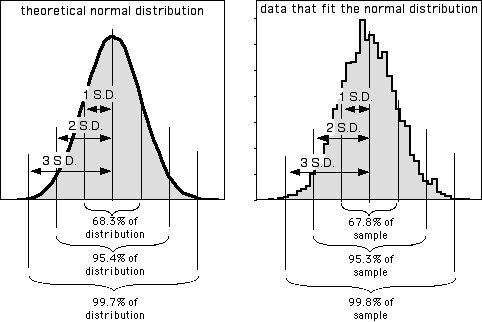
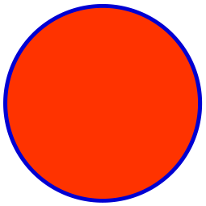

Introduction To Probability 的阅读草稿纸
Table of Contents
- 使用 Maxima
- Chapter 1: 概率和计数 (Probability and counting)
- Chapter 2: 条件概率 (Conditional probability)
- 根据条件进行思考的重要性 (
The importance of thinking conditionally) - 定义和直觉 (
Definition and intuition) - 贝叶斯法则和全概率公式 (
Bayes’ rule and the law of total probability) - 条件概率是概率 (Conditional probabilities are probabilities)
- 事件的独立性 (
Independence of events) - 贝叶斯法则的一致性 (
Coherency of Bayes' rule) - 条件作为解决问题的工具 (
Conditioning as a problem-solving tool)
- 根据条件进行思考的重要性 (
- Chapter 3: 随机变量以及它们的分布 (Random variables and their distributions)
- 随机变量 (
Random Variables) - 分布和概率质量函数 (
Distributions and probability mass functions) - 伯努利分布和二项分布 (
Bernoulli and Binomial) - 超几何分布 (
Hypergeometric) - 离散均匀分布 (
Discrete Uniform) - 累积分布函数 (
Cummulative distribution functions) - 以随机变量为参数的函数 (
Functions of random variables) - 随机变量的独立性 (
Independence of r.v.s) - 二项分布和超几何分布的联系 (
Connections between Binomial and Hypergeometric)
- 随机变量 (
- Chapter 4: 期望 (Expectation)
- 期望的定义 (
Definition of expectation) - 期望的线性性质 (
Linearity of expectation) - 几何分布和负二项分布 (
Geometric and Negative Binomial) - 指示随机变量和基础桥梁 (
Indicator r.v.s and the fundamental bridge) - 无意识统计学家定理 (
Law of the unconscious statistician,LOTUS) - 方差 (
Variance) - 泊松分布 (
Poisson) - 泊松分布和二项分布之间的联系 (
Connections between Poisson and Binomial) - 使用概率和期望证明存在性 (
Using probability and expectation to prove existence)
- 期望的定义 (
- Chapter 5: 连续型随机变量 (Continuous random variables)
- Chapter 6: 矩 (Moments)
- Chapter 7: 联合分布 (Joint distributions)
- Chapter 8: 变换 (Transformations)
- Chapter 9: 条件期望 (Conditional expectation)
- Chapter 10: 不等式和极限定理 (Inequalities and limit theorems)
- Chapter 11: 马尔可夫链 (Markov chains)
- Chapter 12: 马尔可夫链蒙特卡洛方法 (Markov chains Monte Carlo)
- Chapter 13: 泊松过程 (Poission process)
- 计算机应用
关于概率论的阅读笔记, 为了学习 PBR 速通的学习笔记, 还需要完善.
使用 Maxima
https://maxima.sourceforge.io/docs/manual/maxima_218.html
https://home.csulb.edu/~woollett/stat.html
事实上在统计方面, R 语言更有优势, 所以可以的话就用 R 吧.
Chapter 1: 概率和计数 (Probability and counting)
重点关注自然语言和数学语言之间的切换, 形成看到其中一方就联想到另一方的条件反射.
Sample spaces and Pebble World
- P3, 样本空间 (Sample spaces): 一个实验的所有 可能 结果(
outcome), 这些结果构成的集合就是样本空间. 进行一次实验就是从该集合中随机抽取一个结果. - P3, 事件 (event): 样本空间的子集, 如果该子集包含了实际结果(区别于可能结果), 那么就说事件发生了.
- P220, 均匀分布 (uniform distribution): 如果每个结果被抽取的可能性都是一样的, 那么就说采样空间服从均匀分布, 或者说是等可能性的(
equally likely).
概率的朴素定义 (Naive definition of probability)
- P6, 朴素定义 (
naive definition) - P7, 朴素概率只适用于服从均匀分布的问题, 并且采样空间必须是有限的. 另外的作用是作为一个零模型(
null model), 用来测试问题是否服从均匀分布.
如何计数 (How to count)
- P8, 使用组合数学(
combinatorics)计数 P8, 乘法法则(
Multiplication rule): 一个由两个子实验构成的实验: 实验 \(A\) 和实验 \(B\), 如果 \(A\) 的采样空间大小为 \(a\), \(B\) 的为 \(b\), 那么整个实验的采样空间大小为 \(ab\).适用于放回抽样(
sampling with replacement)和不放回抽样(sampling without replacement)且服从均匀分布的实验.- P11,
Example 1.46\(n\) 个结果(元素)构成多少种可能的子集: \(2^{n}\). 也就是说一个大小为 \(n\) 的采样空间最多可以有 \(2^{n}\) 种事件. P11, 放回抽样 (sampling with replacement): 选中一个实验结果, 但并不会把该结果排除之后的可选范围外.
放回抽样实验之间是独立的.
(PS: 笔记这里提前用到二项系数和排列数.)
如果从 \(n\) 个可能中随机选择 \(k\) 次,
考虑抽取顺序的情况下, 总共有 \(n^{k}\) 种可能;
不考虑抽取顺序的情况下, 总共有 \(C_{n+k-1}^{k} = \frac{A_{n+k-1}^{k}}{k!}\) 种可能(
P18, Example 1.4.22有证明).P12, 不放回抽样 (sampling without replacement): 选中一个实验结果并把它排除出之后的可选范围外.
放回抽样实验之间是不独立的, 前一次抽样会对下一个实验结果被抽样概率变大, 之后会见到这种例子.
如果从 \(n\) 个可能中随机抽取 \(k\) 次 (\(1 \le k \le n\)),
考虑抽取顺序的情况下, 一共有 \(A_{n}^{k} = \frac{n!}{(n - k)!} = n(n-1) \dots (n-k+1)\) 种可能;
如果要计算 \(n\) 个元素一共有多少种排列可能, 那么就是 \(A_{n}^{n} = n!\), 这叫做全排列.
不考虑抽取顺序的情况下, 一共有 \(C_{n}^{k} = \frac{A_{n}^{k}}{k!}\) 种可能(
P15, 二项式系数公式).P15, 二项式系数公式 (Binomial coefficient formula): 不考虑抽样顺序, 计算从 \(n\) 里面进行 \(k\) 次不放回抽样一共有多少种可能.
又称组合数(
combination).\(\left(\begin{array}{c} n \\ k \end{array}\right) = C_{n}^{k} = \frac{A_{n}^{k}}{k!} = \frac{n (n-1) \dots (n-k+1)}{k!} = \frac{n!}{(n-k)!k!}\).
\(k!\) 代表着重复组合的数量, 比如 \((a, b)\) 和 \((b, a)\) 就是一对重复组合, 用排列数(
permutations) \(A_{n}^{k}\) 除以重复的组合数量这个运算叫调整超额计算(adjusting for overcounting).重复组合的数量也表示着所有的排序可能, 后面也会经常用到这个公式.
P16, Example 1.4.18演示了如何针对不服从均匀分布的问题计算二项式系数, 以及说明了 \(\left(\begin{array}{c} n \\ k \end{array}\right) = \left(\begin{array}{c} n \\ n - k \end{array}\right)\).- P16, 二项式定理 (Binomial theorem): \((x + y)^{n} = \sum\limits_{k=0}^{n}\left(\begin{array}{c} n \\ k \end{array}\right)x^{k}y^{n-k}\).
P18, Bose-Einstein: 无序的放回抽取实验的组合数推导.
这个推导是通过 解决同构问题 来解决问题的典范.
把这个问题看作是如何把 \(k\) 个球分配到 \(n\) 个箱子里面, 一个箱子可以放入 \([0, k]\) 个球, 这对应了放回抽样.
如果不明白什么对应了放回抽样, 那么可以反过来描述, 从 \(n\) 个箱子中随机选择 1 个放入球体并进行记录,
再把球拿出来待下一次入箱, 整个过程重复 \(k\) 次, 那么一个箱子有可能被多次选择放入球, 某个箱子被放入球就是其中一个实验结果, 该结果并没因为被选择后被而排除在下一次可选范围外.
\(n\) 个箱子可以看作 \(n + 1\) 个隔板, 有 2 个隔板在边界上, 这 2 个边界隔板之间有 \(n - 1\) 个隔板.
那么球的分配方式又可以被看作是 \(n - 1\) 个隔板和 \(k\) 个球之间排列方式, 把中间的隔板和球看作是一个个待填充的槽位, 槽位数量为 \(n + k - 1\) 个.
那么现在的问题又变为 "从 \(n + k - 1\) 个槽位随机选择 \(k\) 个放入球, 一共有多少种可能", 所以问题的结果是 \(\left( \begin{array}{c} n + k - 1 \\ k \end{array} \right)\).
这个推导的结果不能用在朴素概率上, 因为"无序的放回抽取实验"的采样空间是不服从均匀分布的.
故事证明 (Story Proofs)
- P20, 故事证明: 少点代数, 多些直觉, 举例子进行证明.
- P21, 范德蒙恒等式 (Vandermonde’s identity): \(\left(\begin{array}{c} m + n \\ k \end{array}\right) = \sum\limits_{j=0}^{k} \left(\begin{array}{c} m \\ j \end{array}\right) \left(\begin{array}{c} n \\ k - j \end{array}\right)\).
概率的非朴素定义 (Non-naive definition of probability)
P21, 非朴素概率可以处理朴素概率不能处理的问题, 因此它不要求样本空间服从均匀分布, 也不要求样本空间的样本数量是有限的.
因此, 非朴素概率也叫做通用概率.
P22, 概率的通用定义 (General definition of probability)
概率空间(
probability space) 由一个样本空间 \(S\) 和一个 概率函数(probability function) \(P\) 构成,\(P\) 以一个事件 \(A \subseteq S\) 作为参数, 函数结果 \(P(A)\) 的取值范围为 \(0 \le P(A) \le 1\).
\(P\) 必须满足以下公理(
axioms):- \(P(\emptyset) = 0\), \(P(S) = 1\).
如果 \(A_{1}\), \(A_{2}\), \(\dots\) 是不相交(
disjoint)的事件, 那么 \(P(\bigcup\limits_{j=1}^{\infty}) = \sum\limits_{j=1}^{\infty}P(A_{j})\).(通俗点说就是这些事件是相互排斥的: \(A_{i} \cap A_{j} = \emptyset\), 其中 \(i \ne j\).)
P22, 频率派概率 (
the frequentist view of probability)概率代表在大量重复实验后统计所得的长期频率.
P22, 贝叶斯派概率 (
the Bayesian view of probability)概率代表个人对事件/命题的信任程度(
degree of belief).比如对命题 "候选人 \(A\) 会赢得选举" 或者 "被告人是有罪的" 赋予概率, 概率大小取决于个人看法, 这些命题是没法进行重复实验(重复选举, 重复犯罪)来获取概率的.
因此, 对于没法重复实验的问题, 贝叶斯派概率是很有用的.
- P23, 频率派和贝叶斯派是对概率的不同解释方式, 它们是互补的.
P23, 概率的属性 (properties of probability)
对于任意事件 \(A\) 和 \(B\),
- \(P(A^{c}) = 1 - P(A)\).
- 如果 \(A \subseteq B\), 那么 \(P(A) \le P(B)\).
- \(P(A \cup B) = P(A) + P(B) - P(A \cap B)\).
P25, 容斥定理 (Inclusion-exclusion)
对于任意事件 \(A_{1}, \dots, A_{n}\), \(P(\bigcup\limits_{i=1}^{n}A_{i}) = \sum\limits_{i}P(A_{i}) - \sum\limits_{i \lt j}P(A_{i} \cap A_{j}) + \sum\limits_{i \lt j \lt k}P(A_{i} \cap A_{j} \cap A_{k}) - \dots + (-1)^{n+1}P(A_{1} \cap \dots \cap A_{n})\).
- P25, de Montmort's matching problem: 容斥定理的应用.
Chapter 2: 条件概率 (Conditional probability)
P45, 条件概率 (Conditional probability)
贝叶斯派通过个人的信任程度描述一个不确定事件概率.
当一个人通过观察后发现了更多关于事件的相关证据, 这个人会对事件更加确定, 这些证据有可能会进一步提升对事件的信任程度, 也有可能对事件的信任产生怀疑.
条件概率就是这么一个概念: 如何通过观察所得的证据来更新对事件的信任程度.
根据条件进行思考的重要性 (The importance of thinking conditionally)
P45, 有用的思考角度: 所有概率都是依条件而定的(
all probabilities are conditional), 每个概率的背后必定有背景知识(或假设)作为支撑.\(P(R|C)\): 在条件 \(C\) 下(在事件 \(C\) 发生的前提下) \(R\) 的概率(
the probability of R given C).\(P(R|B_{1},\dots,B_{n})\): 在事件 \(B_{1},\dots,B_{n}\) 发生的前提下, 事件 \(R\) 发生的概率.
逗号表示交集, 所以 \(B_{1},\dots,B_{n}\) 等于 \(B_{1} \cap \dots \cap B_{n}\).
当要把事件关系翻译成自然语言时, 逗号会显得自然一些.
当观察 \(B_{1},\dots,B_{n}\) 发生后, \(R\) 最终发生了, 那么 \(P(R|B_{1},\dots,B_{n}) = 1\).
定义和直觉 (Definition and intuition)
P46, 条件概率 (Conditional probability): 如果 \(A\) 和 \(B\) 是事件, 其中 \(P(B) \gt 0\), 那么在 \(B\) 发生的前提下 \(A\) 的条件概率为 \(P(A|B) = \frac{P(A \cap B)}{P(B)}\).
\(A\) 是需要更新概率的不确定事件, \(B\) 是通过观察所得的证据.
\(P(A)\) 被称为 \(A\) 的先验概率 (
the prior probability), \(P(A|B)\) 被称为 \(A\) 的后验概率(the posterior probability).(先验的意思是在观察证据之前, 后验的意思是在观察证据后.)
对于任何事件, \(P(A|A) = \frac{P(A \cap A)}{P(A)} = 1\) 都成立: 在 \(A\) 发生的前提下, \(A\) 发生了.
P46,
Example 2.2.2这个例子说明了一些重要的事实:
- \(P(A|B) \ne P(B|A)\).
- 事件 \(A\) 和 \(B\) 两者之间不是独立的, 可以从 \(B\) 获得信息推断 \(A\) 的概率. 所以 \(P(B|A)\) 不同于朴素概率里面的先抽样 \(A\) 在抽样 \(B\) 的情况, 由于后者的 \(A\) 和 \(B\) 之间是独立的, 所以后者概率是 \(P(A)P(B) = P(A \cap B)\). (只有 \(A\) 和 \(B\) 独立时该等式才成立, 交集的计算方式并没有公式, 只有具体问题具体分析, 后面例子就是如此.)
- \(P(B|A)\) 比 \(P(A|B)\) 更容易求解.
P48, 使用
Pebble World对 \(P(A|B)\) 进行直觉演示.这个演示说明了一个事实: \(P(A|B)\) 就是以事件 \(B\) 作为样本空间来计算 \(A\) 的概率.
因此, \(P(A|B)\) 相比 \(P(A)\) 就是相当于切换了样本空间, 从初始的样本空间切换到其子集 \(B\).
如果 \(A\) 和 \(B\) 是不相交的, 那么 \(P(A|B) = \frac{P(A \cap B)}{P(B)} = 0\), 其中 \(P(B) \gt 0\), \(P(A) = 0\),
换句话就是 \(B\) 发生了, \(A\) 必然不发生; 反过来 \(P(B|A) = 0\) 就是 \(A\) 发生了, \(B\) 必然不发生.
结合
Example 2.2.2可以再得出一个结论: 事件不相交 不等于 事件之间独立.事件不相交, 当事件之间还是会影响对方的概率, 比如 \(P(A|B) = \frac{A \cap B}{P(B)} = 0\) 意味着当 \(P(B) > 0\) 时可以推断出 \(P(A) = 0\), 通俗点说只要知道 \(B\) 发生了会可以得知 \(A\) 不会发生.
但是事件不独立时, 除非提前知道 \(P(A \cap B)\), 否则单凭 \(P(B)\) 是没法推断出 \(P(A)\) 的, 因为交集的计算方式并没有公式, 具体问题具体分析.
- P48, 直觉演示: 频率论解析(Frequentist interpretation)
P51, 对比
Example 2.2.7和Example 2.2.5的结果可以发现 通过不停的增加观察事件可以让结果接近某个值.增加的观察事件越多, 描述的对象就越具体, 最后的结果变成是"否为该对象"的概率.
最重要的还是学会如何把集合运算翻译成自然语言来表达, 这个过程可能会让你发现不一样的事件关系:
\(\text{both girls} \cap \text{ at least one winter girl} \rightarrow \text{both girls, at least one winter girl} \rightarrow \text{both girls, at least one winter child}\).
Example 2.2.7:其中对于 \(P(\text{at least one winter girl})\) 本质上是考虑顺序的放回抽样实验, 不通过相反事件进行计算得讨论各种排列的概率并且全部统计: \((\frac{1}{8})^{2} + \frac{1}{8} \times \frac{7}{8} + \frac{7}{8} \times \frac{1}{8} = 1 - (\frac{7}{8})^{2}\).
贝叶斯法则和全概率公式 (Bayes’ rule and the law of total probability)
- P52, 两个事件交集的概率 (Probability of intersection of two events): \(P(A \cap B) = P(B)P(A|B) = P(A)P(B|A)\).
P53, \(n\) 个事件交集的概率 (Probability of intersection of n events)
对于事件 \(A_{1}, \dots, A_{n}\), \(P(A_{1},A_{2},\dots,A_{n-1}) \gt 0\), \(P(A_{1}, A_{2}, \dots, A_{n}) = P(A_{1})P(A_{2}|A_{1})P(A_{3}|A_{1},A_{2}) \dots P(A_{n}|A_{1},\dots,A_{n-1})\).
这个定理有 \(n!\) 种排列可能, 它们的计算结果都是一样的.
P53, 贝叶斯法则 (
Bayes' rule): \(P(A|B) = \frac{P(B|A)P(A)}{P(B)}\).在 \(P(A|B)\) 和 \(P(B|A)\) 之间转换.
P53, 机率 (Odds): 事件发生的概率与不发生概率之比, \(\text{odds}(A) = \frac{P(A)}{P(A^{c})}\).
如果 \(P(A) = \frac{2}{3}\), 那么就说 \(A\) 发生的概率比为 \(2\) 比 1 (the odds in favor of A are 2 to 1.), 也就是 \(\text{odds}(A) = \frac{2}{1}\).
也可以从机率换算回概率: \(P(A) = \frac{\text{odds}(A)}{1 + P(A)}\).
P54, 贝叶斯法则的机率形式 (Odds form Bayes' rule): 对于事件 \(A\) 和 \(B\), 在事件 \(B\) 发生的前提下, \(A\) 的机率为: \(\frac{P(A|B)}{P(A^{c}|B)} = \frac{P(B|A)}{P(B|A^{c})} \frac{P(A)}{P(A^{c})}\).
等式变换过程如下:
\(\frac{P(A|B)}{P(A^{c}|B)} = \frac{P(A \cap B)}{P(B)} \times \frac{P(B)}{P(A^{c} \cap B)} = \frac{P(A \cap B)}{P(A^{c} \cap B)} = \frac{P(B|A)P(A)}{P(B|A^{c})P(A^{c})} = \frac{P(B|A)}{P(B|A^{c})} \frac{P(A)}{P(A^{c})}\).
其中 \(\frac{P(A|B)}{P(A^{c}|B)}\) 被称为后验机率(
posterior odds),\(\frac{P(A)}{P(A^{c})}\) 被称为先验机率(
prior odds),\(\frac{P(B|A)}{P(B|A^{c})}\) 被称为似然比(
likelihood ratio).P54, 全概率公式 (
Law of total probability, LOTP)设 \(A_{1},\dots,A_{n}\) 为样本空间 \(S\) 的分区(
partition, 也就是说事件之间不相交, 所有事件的并集为 \(S\)): \(P(B) = \sum\limits_{i=1}^{n}P(B|A_{i})P(A_{i})\).该公式让条件概率 \(B\) 和非条件概率 \(A_{i}\) (\(1 \le i \le n\)) 建立起了联系, 用条件概率 \(A_{i}\) 把复杂的概率问题 \(B\) 分解成多个更加简单的概率问题, 前提是分区是经过精心挑选的, 否则只会让问题更加复杂.
- P54,
Example 2.3.7演示了让作为条件的事件 \(F\) 以及 它的补集 \(F^{c}\) 对事件 \(A\) 进行分区, 并且使用LOTP计算出 \(P(A) = P(A|F) + P(A|F^{c})\). P56,
Example 2.3.9假设了 \(P(T|D) = P(T^{c}|D^{c}) = 0.95\), 然后通过故事证明法来计算出 \(P(T|D^{c})\) 的概率, 最后结合
LOTP和贝叶斯法则计算出 \(P(D|T)\).- P58,
Example 2.3.10- (a) \(\frac{p_{1} \cdot \frac{1}{n}}{p_{1} \cdot \frac{1}{n} + p_{0}(1 - \frac{1}{n})} = \frac{\frac{1}{n}}{\frac{1}{n} + \frac{p_{0}}{p_{1}}(1 - \frac{1}{n})} = \frac{1}{1 + a(n - 1)}\)
- (b) 这个问题是第一次演示了多条件的概率 \(P(A|B,C)\) 和 \(P(B,C|A)\) 的关系, 后面会提到.
条件概率是概率 (Conditional probabilities are probabilities)
条件概率符合概率的所有特征, 这小节主要介绍一些条件概率运算的推导结果.
把所有无条件概率替换成基于任意事件 \(E\) 的条件概率, 满足以下特征:
- 条件概率在 \([0, 1]\).
- \(P(S|E) = 1\) (\(S\) 代表着整个采样空间), \(P(\emptyset|E) = 0\).
- 如果事件 \(A_{1}, A_{2}, \dots\) 是不相交的, 那么 \(P(\bigcup\limits_{j=1}^{\infty}A_{j}|E) = \sum\limits_{j=1}^{\infty}P(A_{j}|E)\).
- \(P(A^{c}|E) = 1 - P(A|E)\).
- 容斥: \(P(A \cup B|E) = P(A|E) + P(B|E) - P(A \cap B|E)\).
(相当于在原版基础上的每个概率各添加了条件 \(E\).)
为了方便表示, 规定把一个事件 \(E\) 固定 (\(P(E) \lt 0\)), 对于任意事件 \(A\), 定义 \(\tilde{P}(A) = P(A|E)\).
- \(\tilde{P}(S) = 1\), \(\tilde{P}(\emptyset) = 0\).
- 如果事件 \(A_{1}, A_{2}, \dots\) 是不相交的, 那么 \(\tilde{P}(A_{1} \cup A_{2} \cup \dots) = \frac{\sum\limits_{j=1}^{\infty} P(A_{j} \cap E)}{P(E)} = \sum\limits_{j=1}^{\infty}\tilde{P}(A_{j})\).
- \(\tilde{P}(A^{c}) = 1 - \tilde{P}(A)\).
- P60, 贝叶斯法则加上额外条件 (Bayes' rule with extra conditioning): 对于 \(P(A \cap E) \lt 0\) 以及 \(P(B \cap E) \lt 0\), 有 \(P(A|B,E) = \frac{P(B|A,E)P(A|E)}{P(B|E)}\).
- P60, LOTP加上额外条件 (LOTP with extra conditioning): 对 \(S\) 进行分区得到 \(A_{1},\dots,A_{n}\), 对于所有的 \(i\) 满足 \(P(A_{i} \cap E) \lt 0\), 有 \(P(B|E) = \sum\limits_{i=1}^{n}P(B|A_{i},E)P(A_{i}|E)\).
P62, 对于多条件的后验概率 \(P(A|B,C)\), 可以自然地把 \(B,C\) 单独看作一个事件 \(B \cap C\), 所以 \(P(A|B,C) = \frac{P(A,B,C)}{P(B,C)}\).
使用贝叶斯法则写成 \(P(A|B,C) = \frac{P(B,C|A)P(A)}{P(B, C)} = \frac{P(B|A,C)P(A|C)}{P(B|C)} = \frac{P(C|A,B)P(A|B)}{P(C|B)}\).
这一系列的变换就是在变换基础条件, 第一个基础条件是 \(A\), 第二个是 \(C\), 第三个是 \(B\)，同时也说明了不要硬套公式, 具体问题具体思考.
还有一点, 虽然书上没强调, 但应该清楚 \(P(A|B,C) = P(A|C,B)\), 因为集合运算符合交换律, 所以 \(B \cap C = C \cap B\).
事件的独立性 (Independence of events)
- P63, 事件之间不能从一个事件中获得另外一个事件的信息的情况被称为事件之间独立(
independence). P63, 两个事件之间的独立性 (Independence of two events): 如果事件 \(A\) 和 \(B\) 满足 \(P(A \cap B) = P(A)P(B)\), 那么这两个事件就是独立的.
如果 \(P(A) \gt 0\) 以及 \(P(B) \gt 0\), 那么 \(P(A|B) = P(A)\) 以及 \(P(B|A) = P(B)\).
\(\begin{equation*} \left\{\begin{aligned} P(A|B) = \frac{P(A \cap B)}{P(B)} = \frac{P(A)P(B)}{P(B)} = P(A) \\ P(B|A) = \frac{P(A \cap B)}{P(A)} = \frac{P(A)P(B)}{P(A)} = P(B) \end{aligned}\right. \end{equation*}\)
独立是对称关系(
symmetric relation), 如果 \(A\) 独立于 \(B\), 那么 \(B\) 也独立于 \(A\).- P63, 独立不等于不相交, 参考这里.
- P64, 如果 \(A\) 和 \(B\) 之间独立, 那么 \(A\) 和 \(B^{c}\) 之间独立, \(A^{c}\) 和 \(B\) 之间独立, \(A^{c}\) 和 \(B^{c}\) 之间也独立.
P64, 三个事件之间的独立 (Independence of three events): 如果事件 \(A\), \(B\) 和 \(C\) 独立, 那么必须满足以下关系: \(\begin{equation*} \left\{ \begin{aligned} & P(A \cap B) = P(A)P(B) \\ & P(A \cap C) = P(A)P(C) \\ & P(B \cap C) = P(B)P(C) \\ & P(A \cap B \cap C) = P(A)P(B)P(C) \end{aligned} \right. \end{equation*}\).
如果只有前三个关系成立, 那么 \(A\) \(B\) 和 \(C\) 之间被称为两两独立 (
pairwise independent).两两独立不意味者独立, 只能说明只研究 \(A\) 或 \(B\) 对于预测 \(C\) 的发生毫无作用, 但同时研究 \(A\) 和 \(B\) 还是可以预测 \(C\) 的发生.
同样, 独立也不意味着两两独立, 比如当 \(P(A) = 0\) 时, \(P(A \cap B \cap C) = P(A)P(B)P(C) = 0\), 并无法得知 \(P(B)\) 和 \(P(C)\) 各自的情况.
P65, 多个事件之间的独立 (Independence of many events): 对于 \(n\) 个事件 \(A_{1},A_{2},\dots,A_{n}\) 独立, 要求任意两个事件满足 \(P(A_{i} \cap A_{j}) = P(A_{i})P(A_{j})\) (其中 \(i \ne j\)),
任意三个事件满足 \(P(A_{i} \cap A_{j} \cap A_{k}) = P(A_{i})P(A_{j})P(A_{k})\) (其中 \(i \ne j \ne k\)), 任意四个事件， 五个事件满足类似的关系, 如此类推.
- P65, 条件独立 (Conditional independence): 如果事件 \(A\) 和 \(B\) 以及 \(E\) 满足 \(P(A \cap B|E) = P(A|E)P(B|E)\), 那么就说 \(A\) 和 \(B\) 在条件 \(E\) 的前提下条件独立(
conditionally independent). P65, 条件独立不意味着独立, 独立也不意味着条件独立， 也就是 \(P(A,B) = P(A)P(B)\) 不意味着 \(P(A,B|E) = P(A|E)P(B|E)\), 反过来也如此.
另外, \(P(A,B|E) = P(A|E)P(A|B)\) 不意味着 \(P(A,B|E^{c}) = P(A|E^{c})P(B|E^{c})\).
P65,
Example 2.5.9(\(\text{Conditional independence given }E\text{ vs. given }E^{c}\))例子中的学生想取得成绩
A(事件 \(A\))要求努力(事件 \(W\))和承认努力的好班级(事件 \(G\)), 不好的班级(事件 \(G^{c}\)) 是随机评成绩的, 所以在不好的班级下努力并不能保证能拿到成绩A.因此, \(A\) 和 \(W\) 在 \(G^{c}\) 前提下是独立的, 但是在 \(G\) 作为前提下不是独立的.
P65,
Example 2.5.10(Conditional independence doesn't imply independence)以
Example 2.3.7作为例子, 在不知道选中哪一个硬币的时候, 每次投币都不是(非条件)独立的, 因为每次的投币结果可以让我们大概知道选中的是哪一个硬币, 从而预测下一次投币结果.但在知道选中的硬币时, 每次投币之间就是条件独立的.
- P66,
Example 2.6.11(Independence doesn't imply conditional independence)
贝叶斯法则的一致性 (Coherency of Bayes' rule)
使用多个条件对事件进行更新时, 无论是逐个条件对事件进行更新还是一次性让所有条件对事件进行更新, 最终两种情况下得到的事件的后验概率都是一致的.
条件作为解决问题的工具 (Conditioning as a problem-solving tool)
P68, 以希望知道的事情作为条件进行思考, Example 2.7.1, 蒙提霍尔问题 (Monty Hall).
蒙提霍尔问题是经典的反直觉概率问题, 但是把样本空间从 3 变为更大样本空间的情况下就很好理解了.
P71, 以实验的第一步作为条件进行思考, 解决设计递归结构的问题.
可以只考虑第一步是因为问题的自相似性(
self-similar nature), 也就是对问题分割得到的子问题和原问题是一致或局部一致.
Chapter 3: 随机变量以及它们的分布 (Random variables and their distributions)
随机变量 (Random Variables)
P104, 随机变量 (Random Variable): 假设有一个样本空间为 \(S\) 的实验, 随机变量 \(\text{r.v.}\) 是一个将样本空间 \(S\) 映射到实数 \(\mathbb{R}\) 的函数.
在通过实验获得样本空间后, 我们需要选定实验结果的特征给实验结果进行分类, 并且使用数字给每个分类进行编码, 每个分类的数字都不一样.
这个依据的特征就是随机变量 \(X\), \(X(s)\) 就是获取实验结果 \(s\) 的分类 \(E\) 的编码, (其中 \(s \in E\)),
分类其实就是事件 \(E\), 有时候会说事件 \(E\) 的随机变量 \(X\) 为多少, 其实就是说 \(X(s)\) 的值是多少.
比如随机抽取
100个人, 按照身高范围对实验对象进行分类, 那么身高就是随机变量 \(X\), 把身高在 \(170\text{cm}\) 到 \(180\text{cm}\) 的实验对象作为一个分类 \(E\), 用数字 170 表示, 也就是当 \(s \in E\) 时, \(X(s) = 170\).编码方案并不是固定的, 可以把 170 换成其它数字, 取决于个人喜好, 但是在一个编码方案下的映射关系是固定的, 比如在现有方案下, 当实验对象 \(s\) 的身高在 \(165\text{cm}\) 时 (\(s \notin E\)) 使得 \(X(s) \ne 170\).
随机性源自于实验本生的随机性(随机性受概率函数影响, 后面会提到), 随机变量的映射关系本身就是确定的.
Example 3.1.2必读.P105,
Example 3.1.2必读, 其中介绍了指示随机变量(indicator random variable)的概念: 函数的值只表示 "yes" 和 "no" 两种结果.并且用例子演示了随机变量的概念.
比如投两次硬币为一个实验结果, 假设该结果为 \(HT\) (第一次正面, 第二次背面), 随机变量 \(X\) 为一个实验结果出现正面的次数, 因此 \(X(HT) = 1\);
假设 \(Y\) 为一个实验结果出现背面的次数, 因此 \(Y(HT) = 1\);
假设 \(I\) 在一个实验结果符合第一次为正面的特征时为 1, 也就是 \(I(HT) = I(HH) = 1\), 否则为 0, 也就是 \(I(TH) = I(TT) = 0\),
\(I\) 就是指示随机变量.
分布和概率质量函数 (Distributions and probability mass functions)
P106, 离散型随机变量 (Discrete random variable)
对于一个随机变量 \(X\), 如果它所有可能映射的值为一个有限列表 \(a_{1},a_{2},\dots,a_{n}\) 或者一个无限列表 \(a_{1},a_{2},\dots\) (这些值并且互不相同) 使得 \(P(X = a_{j}\text{ for some }j) = 1\), (对于有限列表, \(j = n\)), 那么就说 \(X\) 是一个离散型随机变量.
\(P(X = a_{j}\text{ for some }j) = 1\) 还有其它表达方式:
- \(P(X=\left\{a_{1},a_{2},\dots\right\}) = 1\), 变量 \(j\) 表示着集合 \(\left\{ a_{1},a_{2},\dots \right\}\) 的大小
\(\sum\limits_{i=1}^{j}P(X=a_{i}) = 1\)
在 P(X = x) 里面, \(X = x\) 是一个包含了所有满足 \(X(s) = x\) 的实验结果 \(s\) 的集合, 也就是一个事件.
正式写法是 \(\left\{ s \in S: X(s) = x \right\}\) 或者 \(\left\{ s: s \in S, X(s) = x \right\}\).
比如
Example 3.1.2中统计实验结果中硬币为正面的次数, 要取只有一次正面的所有实验结果 (\(X = 1\)): 等同于 \(\left\{ HT, TH \right\}\).写作 \(\left\{ X = 1 \right\}\) 更符合直觉.
如果 \(X\) 是离散型随机变量, 那么满足 \(P(X=x) \gt 0\) 的有限或可数无限的数值集合 \(x\) 被称为 \(X\) 的支撑集(
support).换句话就是支撑集 \(x\) 要满足是 \(X\) 的子集且满足 \(P(x) \gt 0\).
- P107, 分布 (Distribution): 随机变量 \(X\) 落入样本空间 \(S\) 中任何特定集合(事件) \(E_{i}\) 的概率 \(p_{i}\), 其中 \(1 \le i \le n\), \(n\) 为集合(事件)个数, 分布就是所有 \(p_{i}\) 的信息.
- P107, 概率质量函数 (Probability mass function, PMF): 用于描述离散型随机变量 \(X\) 的分布, 是一个关于离散型随机变量 \(X\) 的函数: \(p_{X}(x) = P(X = x)\).
- P110, 合理的 PMFs (Valid PMFs), 要满足两个标准(
criteria):- 概率非负(
nonnegative): 如果 \(x\) 是 \(X\) 支撑集的元素, 那么 \(p_{X}(x) \gt 0\), 否则 \(p_{X}(x) = 0\). - 总和为 1 (
sums to 1): \(\sum\limits_{i=0}^{\infty} p_{X}(x_{i}) = 1\).
- 概率非负(
伯努利分布和二项分布 (Bernoulli and Binomial)
在概率论和统计学中, 有一些有名的分布, 这一节先介绍其中两种.
P112, 伯努利分布 (Bernoulli distribution): 如果随机变量 \(X\) 满足 \(P(X = 1) = p\) 以及 \(P(X = 0) = 1 - p\), 其中 \(0 \lt p \lt 1\), 那么就说 \(X\) 服从伯努利分布, 通常写作 \(X \sim \text{Bern}(p)\).
伯努利分布是一类类似的分布, 由 \(p\) 进行区分.
任何只有 0 和 1 两种可能值的随机变量都服从伯努利分布, 这种随机变量也被称为伯努利随机变量.
任何与伯努利随机变量关联的事件, 在发生时的概率为 1, 不发生时为 0, 这个伯努利随机变量被称为事件的指示随机变量.
P112, 指示随机变量 (Indicator random variable)
事件 \(A\) 的指示伯努利随机变量 \(I\) 在事件 \(A\) 发生时为 1, 在不发生时为 0. 人们会用 \(I_{A}\) 或 \(I(A)\) 表示指示随机变量.
\(I_{A} \sim \text{Bern}(p) \rightarrow p = P(A)\).
- P112, 伯努利试验 (Bernoulli trial): 一个只能产生成功或失败结果的实验叫做伯努利实验. 伯努利随机变量等于 1 时表示成功, 等于 0 时表示失败.
- P112, 二项分布 (Bernoulli distribution): 执行 \(n\) 次 独立 的伯努利试验, 每次试验的成功概率为 \(p\) 并且 \(0 \lt p \lt 1\). 设随机变量 \(X\) 为试验成功的次数, \(X\) 的分布被称为二项分布, 写作 \(X \sim \text{Bin}(n, p)\).
P113, 二项分布的 PMF (Binomial PMF): 如果 \(X \sim \text{Bin}(n,p)\), 那么关于 \(X\) 的
PMF为 \(P(X = k) = \left(\begin{array}{c}n \\ k\end{array}\right)p^{k}(1-p)^{n-k}\), 其中 \(k = 0,1,\dots,n\), 否则 \(P(X = k) = 0\).P114, Figure 3.6演示了试验次数 \(n\) 和成功概率 \(p\) 对函数图的影响.P115, 针对失败概率的二项分布 PMF: 假设 \(q = 1 - p\) 表示失败概率, 那么 \(n - X \sim \text{Bin}(n,q)\).
令 \(Y = n - X\), \(P(X = Y) = P(X = n - k) = \left(\begin{array}{c}n \\ n - k\end{array}\right)p^{n-k}q^{k} = \left(\begin{array}{c}n \\ k\end{array}\right)q^{k}p^{n-k}\), 其中 \(k = 0,1,\dots,n\).
- P115, 试验次数为偶数, 成功和失败概率为 \(\frac{1}{2}\) 的 PMF: \(X\) 关于 \(\frac{n}{2}\) 对称, 所以 \(P(X = \frac{n}{2} + j) = P(X = \frac{n}{2} - j)\), 其中 \(j\) 为非负数.
超几何分布 (Hypergeometric)
P115, 超几何分布 (Hypergeometric distribution): 在一个桶中放入 \(w\) 个白球和 \(b\) 个白球, 然后从其中随机不放回抽取 \(n\) 个球(, 其中 \(n \le w + b\)).
让随机变量 \(X\) 为抽取样本中白球的数量, 那么就说 \(X\) 服从超几何分布, 其参数为 \(w\), \(b\) 和 \(n\), 写作 \(X \sim \text{HGeom}(w,b,n)\).
- P116, 超几何 PMF (Hypergeometric PMF): 如果 \(X \sim \text{HGeom}(w,b,n)\), 那么 \(X\) 的
PMF为 \(P(X = k) = \frac{\left(\begin{array}{c} w \\ k \end{array}\right) \left(\begin{array}{c} b \\ n-k \end{array}\right)}{\left(\begin{array}{c} w+b \\ n \end{array}\right)}\), 其中 \(0 \le k \le w\) 并且 \(0 \le n - k \le b\), 否则 \(P(X = k) = 0\). - P117, \(\text{HGeom}(w,b,n)\) 和 \(\text{HGeom}(n,w+b-n,w)\) 两者的分布相同.
- P117, 二项分布的试验之间是独立的, 超几何分布的试验之间不是独立的.
离散均匀分布 (Discrete Uniform)
P118, 离散均匀分布 (Discrete Uniform distribution): \(C\) 是一个有限的非空数字集合, 这里面每个数字被选中的机会都是一样的.
把被选中的数字为 \(X\), 那么 \(X\) 就是服从离散均匀分布的, 其参数是集合 \(C\), 写作 \(X \sim \text{DUnif}(C)\).
\(X\) 的
PMF为 \(P(X = x) = \frac{1}{|C|}\), (\(|C|\) 表示集合 \(C\) 的元素个数,)其中 \(x \in C\), 否则 \(P(X = x) = 0\).当存在集合 \(A \subseteq C\), 那么 \(P(X \in A) = \frac{|A|}{|C|}\).
P119, Example 3.5.2: 演示如何把问题翻译成之前见到过的分布.
累积分布函数 (Cummulative distribution functions)
P120, 累积分布函数 (cummulative distribution function, CDF): \(F_{X}\) 是随机变量 \(X\) 的累积分布函数, 其定义为 \(F_{X}(x) = P(X \le x)\).
它统计若干个随机变量的概率和, 在保证不发生歧义的情况下, 有时候会把下标 \(X\) 去掉, 直接写成 \(F\).
- P121, 合理的 CDFs (Valid CDFs): 任意
CDF\(F\) 必须符合以下特征:- 递增性(
increasing): 如果 \(x_{1} \le x_{2}\), 那么 \(F(x_{1}) \le F(x_{2})\). - 右连续(
right-continuous): 对于任意 \(a\), \(F(a) = \lim\limits_{x \to a^{+}}F(x)\). - \(\lim\limits_{x \to -\infty}F(x) = 0\) 以及 \(\lim\limits_{x \to \infty}F(x) = 1\).
- 递增性(
以随机变量为参数的函数 (Functions of random variables)
P123, 以随机变量为参数的函数 (Function of an r.v.): 以样本空间 \(S\) 的随机变量 \(X\) 为参数的函数 \(g: \mathbb{R} \to \mathbb{R}\), \(g(X)\) 也是一个随机变量.
\(g(X)\) 把 \(s \in S\) 映射到 \(g(X(s))\), 所以 \(g(X)\) 就是一个组合函数.
当已知 \(X\) 的
PMF, 如何找到 \(Y = g(X)\) 的PMF: \(P(Y = g(x)) = P(g(X) = g(x)) = P(X = x)\).P125, \(g(X)\) 的 PMF (PMF of \(g(X)\)): \(g(X)\) 的支撑集是 \(g(x) = y\) 所有 \(y\) 的集合, 其中 \(x\) 存在于 \(X\) 的支撑集里, 那么 \(g(X)\) 的
PMF为: \(P(g(X) = y) = \sum\limits_{x:g(x) = y}P(X = x)\).\(x\) 既要满足 \(y = g(x)\) 的关系, 也要存在于 \(X\) 的支撑集里面, 所有 \(y\) 的集合就是 \(g(X)\) 的支撑集.
P126, 以两个随机变量作为参数的函数 (Function of two r.v.s): \(X\) 和 \(Y\) 是样本空间 \(S\) 的随机变量, \(g(X,Y)\) 是一个把 \(s \in S\) 映射到 \(g(X(s),Y(s))\) 的随机变量.
样本空间 \(S\) 通常被认为是包含了 \(X\) 的样本空间 \(S_{1}\) 和 \(Y\) 的样本空间 \(S_{1}\): \(S = S_{1} \times S_{2} = \left\{ (s_{1}, s_{2}): s_{1} \in S_{1}, s_{2} \in S_{2} \right\}\).
- P127, 类别错误和交感巫术 (Category errors and sympathetic magic): 必读.
随机变量的独立性 (Independence of r.v.s)
P129, 两个随机变量的独立性 (Independence of two r.v.s): 如果随机变量 \(X\) 和 \(Y\) 满足 \(P(X \le x, Y \le y) = P(X \le x)P(Y \le y)\), 其中 \(x, y \in \mathbb{R}\) 并且 \(x\) 是 \(X\) 的支撑集以及 \(y\) 是 \(Y\) 的支撑集, 那么 \(X\) 和 \(Y\) 之间独立.
对于离散情况, \(P(X = x, Y = y) = P(X = x)P(Y = y)\).
P129, 多个随机变量的独立性 (Independence of many r.v.s): 如果随机变量 \(X_{1},\dots,X_{n}\) 满足 \(P(X_{1} \le x_{1},\dots,X_{n} \le x_{n}) = P(X_{1} \le x_{1}) \dots P(X_{n} \le x_{n})\), 其中 \(x_{1},\dots,x_{n} \in \mathbb{R}\), 那么 \(X_{1},\dots,X_{n}\) 之间独立.
如果随机变量之间独立, 那么它们的支撑集是独立的.
- P130, 满足多个随机变量之间的独立和满足多个事件之间的独立的要求是一样的, 要求两两独立以及三者独立等等.
- P130, 独立随机变量的函数 (Functions of independent r.v.s): 如果随机变量 \(X\) 和 \(Y\) 之间独立，那么以 \(X\) 为参数的函数 \(g_{X}\) 和以 \(Y\) 为参数的函数 \(g_{Y}\) 独立.
- P130, 独立同分布 (independent and identically distributed, i.i.d): 意指: 随机变量之间独立并且拥有同样的分布.
- P130, 独立和同分布的区别 (i. vs. i.d.), 必读.
- P131, 如果把 \(X \sim \text{Bin}(n,p)\) 看作 \(n\) 次独立伯努利试验, 每次的成功概率为 \(p\), 那么 \(X = X_{1} + \dots + X_{n}\), 其中 \(X_{i}\) 是
i.i.d.\(\text{Bern}(p)\). - P131, 如果 \(X \sim \text{Bin}(n,p)\), \(Y \sim \text{Bin}(m,p)\), 并且 \(X\) 和 \(Y\) 独立, 那么 \(X + Y \sim \text{Bin}(n+m,p)\). 务必读该定理的证明.
P132, 随机变量的条件独立 (Conditional independence of r.v.s): 随机变量 \(X\) 和 \(Y\) 在随机变量 \(Z\) 为条件的前提下条件独立.
假设 \(x,y \in \mathbb{R}\) 和所有的 \(z\) 为 \(Z\) 的支撑集, 那么 \(P(X \le x, Y \le y|Z = z) = P(X \le x | Z = z)P(Y \le y|Z = z)\).
对于离散情况, \(P(X = x,Y = y|Z = z) = P(X = x|Z = z)P(Y = y|Z = z)\).
- P132, 条件 PMF (Conditional PMF): 对于任意离散随机变量 \(X\) 和 \(Z\), \(P(X = x|Z = z)\) 被称为以 \(Z = z\) 前提下 \(X\) 的条件
PMF.
二项分布和超几何分布的联系 (Connections between Binomial and Hypergeometric)
P135, 如果 \(X \sim \text{Bin}(n,p)\), \(Y \sim \text{Bin}(m,p)\), 并且 \(X\) 独立于 \(Y\), 那么在 \(X + Y = r\) 前提下, \(X\) 的条件分布为 \(\text{HGeom}(n,m,r)\).
给二项分布加上条件就可以得出超几何分布.
P135, 如果 \(X \sim \text{HGeom}(w,b,n)\), 并且 \(N = w + b \to \infty\) 使得 \(p = \frac{w}{w+b}\) 保持固定, 那么 \(X\) 的
PMF趋向 \(\text{Bin}(n,p)\) 的PMF收敛.取超几何分布的极限可以得出二项分布.
Chapter 4: 期望 (Expectation)
期望的定义 (Definition of expectation)
- P149, 平均值(
average/mean), 也叫期望值(expected value).- 算术平均(
arithmetic mean): \(\bar{x} = \frac{1}{n}\sum\limits_{j=1}^{n}x_{j}\). 加权平均(
weighted mean): \(\text{weighted-mean(x)} = \sum\limits_{j=1}^{n}x_{j}p_{j}\), 其中 \(p_{1},\dots,p_{n}\) 被称为权重, 是非负数, 它们全部加起来为 1.如果 \(p_{j} = \frac{1}{n}\), 那么加权平均就是算术平均了.
- 算术平均(
- P149, 研究可变性(
variability), 也就是随机变量的分布如何分散: 是往中心聚集还是周围扩散. 这一点可以通过方差(variance)和标准差(standard deviation)进行研究. P149, 离散随机变量的期望 (Expectation of a discrete r.v.): 随机变量的平均值/期望(
expectation)是加权平均, 权重就是随机变量各个可能值下的概率.假设随机变量 \(X\) 所有可能值 \(x_{1},x_{2},\dots\), 那么 \(X\) 的期望为: \(E(X) = \sum\limits_{j=1}^{\infty}x_{j}P(X = x_{j})\).
另外, \(E(X^n) = \sum \limits_{j=1}^{\infty} x_{j}^n P(X = x_{j})\), 后面会用到这一条关系.
如果样本空间是有限的, 那么 \(E(X) = \sum\limits_{x} x P(X = x)\).
- P151, 如果离散随机变量 \(X\) 和 \(Y\) 有着相同的分布, 那么 \(E(X) = E(Y)\). 但是反过来不成立. 平均值只能用来找出分布的中心, 并不能决定分布的中心.
- P151, \(E(X)\) 经常被简写成 \(EX\), \(E(X^{2})\) 被简写成 \(EX^{2}\), \(E(X^{n})\) 被简写成 \(EX^{n}\).
期望的线性性质 (Linearity of expectation)
P152, 期望的线性性质 (Linearity of expectation): 多个随机变量 \(X_{1},\dots,X_{n}\) 之和 \(\sum\limits_{j=1}^{n}\) 的期望 \(E(\sum\limits_{j=1}^{n}X_{j})\) 等于每个随机变量的期望之和 \(\sum\limits_{j=1}^{n}E(X_{j})\).
满足这些关系: \(\begin{equation*} \begin{cases} E(X + Y) = E(X) + E(Y) & X,Y\text{是随机变量} \\ E(cX) = cE(X) & c\text{是常数}, X\text{是随机变量} \end{cases} \end{equation*}\).
期望的线性性质实际上是来源于求和符号 \(\sum\) 的线性性质:
- \(\sum \limits_{i=1}^n x_{i} + \sum \limits_{i=1}^n y_{i} = \sum \limits_{i=1}^n (x_{i} + y_{i})\)
- \(c \sum \limits_{i=1}^n x_{i} = \sum \limits_{i=1}^n c x_{i}\)
另外可以得出一个关系: \(E(c) = c\).
\(E(c) = \sum \limits_{i=1}^{n} \frac{1}{n} c = \frac{1}{n} \sum \limits_{i=1}^{n} c = \frac{n \cdot c}{n} = c\).
因为期望 \(E(X)\) 是一个常数, 所以 \(E(E(X)) = E(X)\).
- P153, 从单个实验结果 \(s\) 去计算整个样本空间的随机变量 \(X\) 的期望: \(E(X) = \sum\limits_{s}X(s)P(\left\{s\right\})\), 其中 \(P(\left\{s\right\})\) 是单个事件 \(s\) 的权重.
- P154, 期望的线性和事件的独立与否无关.
- P157, 期望的单调性 (Monotonicity of expectation): 让随机变量 \(X\) 和 \(Y\) 有 1 的概率满足 \(X \le Y\), 那么有 1 的概率满足 \(E(X) \le E(Y)\).
几何分布和负二项分布 (Geometric and Negative Binomial)
- P157, 几何分布 (Geometric distribution): 假设有一系列的独立伯努利试验, 每次的成功率为 \(p \in (0, 1)\), 直到成功出现为止, 让随机变量 \(X\) 为失败次数, 那么 \(X\) 服从几何分布, 参数为 \(p\), 写作 \(X \sim \text{Geom}(p)\).
- P157, 几何分布的 PMF (Geometric PMF): \(P(X = k) = q^{k}p\), 其中 \(k = 0,1,2,\dots\) 以及 \(q = 1 - p\).
- P158, 几何 CDF (Geometric PMF): 如果 \(X \sim \text{Geom}(p)\) 那么 \(X\) 的 \(\text{CDF}\) 是 \(F(x) = \begin{equation*} \begin{cases} 1 - q^{\lfloor x \rfloor + 1}, &\text{ if }x \ge 0 \\ 0, &\text{ if }x \lt 0 \end{cases} \end{equation*}\), 其中 \(q = 1 - p\).
- P160, 首次成功的期望 (First Success expectation): 让随机变量 \(Y\) 为一系列独立的伯努利试验(每次成功率为 \(p\))首次出现成功时的试验次数, 写作 \(Y \sim FS(p)\), 其中 \(Y = X + 1\), \(X \sim \text{Geom}(p)\), \(E(Y) = E(X + 1) = \frac{q}{p} + 1 = \frac{1}{p}\).
- P160, 负二项分布 (Negative Binomial distribution): 有一系列独立的伯努利试验, 每个试验的成功概率为 1, 在第 \(r\) 个成功发生后, 之前的所有失败次数为 \(X\), 那么就说 \(X\) 服从负二项分布, 参数为 \(r\) 和 \(p\), 写作 \(X \sim \text{NBin}(r,p)\).
- P160, 负二项分布 PMF (Negative Binomial PMF): 如果 \(X \sim \text{NBin}(r,p)\), \(X\) 的
PMF为 \(P(X = n) = \left( \begin{array}{c} n + r - 1 \\ r - 1 \end{array} \right)p^{r}q^{n}\), 其中 \(n = 0,1,2,\dots\) 以及 \(q = 1 - p\). - P161, 假设 \(X \sim \text{NBin}(r,p)\), \(X_{1}\) 为第 1 次成功出现前的失败次数, \(X_{2}\) 为第 1 次成功后到第 2 成功出现前的失败次数, 如此类推. 可以得到这个关系: \(X = X_{1} + \dots + X_{r}\). 其中 \(X_{i}\) 是
i.i.d\(\text{Geom}(p)\). - P161, 负二项分布的期望 (Negative Binomial expectation): 假设 \(X \sim \text{NBin}(r,p)\), 按照前面的定理可以得出 \(E(X) = E(X_{1}) + \dots + E(X_{r}) = r \cdot \frac{q}{p}\).
- P162, 只有 \(g\) 是线性函数时, \(E(g(X)) = g(E(X))\) 才成立.
指示随机变量和基础桥梁 (Indicator r.v.s and the fundamental bridge)
- P164, 指示随机变量属性 (Indicator r.v. properties): 对于事件 \(A\) 和 \(B\), 以下属性成立:
- 对于任意正整数 \(k\), \((I_{A})^{k} = I_{A}\) 成立.
- \(I_{A^{c}} = I - I_{A}\).
- \(I_{A \cap B} = I_{A}I_{B}\).
- \(I_{A \cup B} = A_{A} + I_{B} - I_{A}I_{B} = 1 - I_{A^{c} \cap B^{c}} = 1 - I_{A^{c}}I_{B^{c}} = 1 - (1 - I_{A})(1 - I_{B})\).
P164, 概率和期望之间的基础桥梁 (Fundamental bridge between probability and expectation): 对于任意事件 \(A\), 我们都有它的指示随机变量 \(I_{A}\), 也就是 \(A\) 发生与否, 所以 \(A = \left\{ s \in S: I_{A}(s) = 1 \right\}\).
因为 \(I_{A} \sim \text{Bern}(p)\), 所以 \(E(I_{A}) = 1 \times p + 0 \times (1 - p) = p = P(A)\).
P165,
Example 4.4.3布尔不等式 (Boole's inequality) 或 邦费罗尼不等式 (Bonferroni’s inequality)对于事件 \(A_{1},A_{2},\dots,A_{n}\), 可以得该关系: \(I(A_{1} \cup \dots \cup A_{n}) \le I(A_{i}) + \dots + I(A_{n})\).
如果左边 \(I(A_{1} \cup \dots \cup A_{n})\) 是 0, 也就是 \(A_{1},\dots,A_{n}\) 里面一个事件也没有发生, 那么等式成立; 如果 \(I(A_{1} \cup \dots \cup A_{n})\) 是 1, 那么 \(A_{1},\dots,A_{n}\) 至少有一个事件发生, 那么同样右边必须至少有一项是为 1, 因此等式也成立.
所以, 根据期望的线性性质和基础桥梁, 可以得出这个关系: \(P(A_{1} \cup \dots \cup A_{n}) \le P(A_{1}) + \dots + P(A_{n})\).
这个关系叫做布尔不等式或者邦费罗尼不等式.
根据指示随机变量的第 4 条属性可以得出这关系:
\(\begin{equation*}\begin{aligned} 1 - I(A_{1} \cup \dots \cup A_{n}) &= I(A_{1}^{c} \cap \dots \cap A_{n}^{c}) \\ &= (1 - I(A_{1})) \dots (1 - I(A_{n})) \\ &= 1 - \sum\limits_{i}I(A_{i}) + \sum\limits_{i \le j}I(A_{i})I(A_{j}) - \dots + (-1)^{n}I(A_{1}) \dots I(A_{n}) \end{aligned}\end{equation*}\).
P169, 通过生存函数计算期望 (Expectation via survival function): 设 \(X\) 为非负整数的随机变量, 设 \(F\) 是 \(X\) 的
CDF, 并且 \(G(x) = 1 - F(x) = P(X \gt x)\). 函数 \(G\) 被称为 \(X\) 的生存函数, 也叫残存函数, 其中 \(P(X \le x)\) 也叫尾概率(tail probabilities).\(E(X) = \sum\limits_{n=0}^{\infty}G(n)\).
无意识统计学家定理 (Law of the unconscious statistician, LOTUS)
- P170, 无意识统计学家定理 (LOTUS): 如果 \(X\) 是一个离散型随机变量, 并且有函数 \(g: \mathbb{R} \to \mathbb{R}\), 那么 \(E(g(X)) = \sum\limits_{x}g(x)P(X = x)\).
方差 (Variance)
P171, 方差和标准差 (Variance and standard deviation): 随机变量 \(X\) 的方差是 \(\text{Var}(X) = E((X - E(X))^{2})\), 方差的开平方被叫做标准差(简称
SD), 为 \(\text{SD}(X) = \sqrt{\text{Var}(X)}\).方差用来描述一个随机变量的分布是如何发散的, 这个度量被称为分散度(
dispersion), 也就是每个 \(X\) 的所有可能值 \(x\) 与 \(X\) 的平均值/期望之间的平均距离.
Figure 1: 散度和标准差和方差关系
P172, 对于任意随机变量 \(X\), \(\text{Var}(X) = E(X^{2}) - (E(X))^{2}\).
推导:
\(\begin{equation*} \begin{aligned} E((X - E(X))^{2}) &= E(X^{2} - 2XE(X) + (E(X))^{2}) \\ &= E(X^{2}) - E(2XE(X)) + (E(X))^{2} \\ &= E(X^{2}) - 2E(X)E(X) + (E(X))^{2} && \text{根据期望的线性性质} \\ &= E(X^{2}) - (E(X))^{2} \end{aligned} \end{equation*}\)
- P172, 方差的属性
- \(\text{Var}(X + c) = \text{Var}(X)\), 其中 \(c\) 是任意常数, \(c\) 只会让分布平移, 并不会改变分布的发散.
- \(\text{Var}(cX) = c^{2}\text{Var}(X)\), 其中 \(c\) 是任意常数.
- 如果随机变量 \(X\) 和 \(Y\) 是独立的, 那么 \(\text{Var}(X + Y) = \text{Var}(X) + \text{Var}(Y)\).
\(\text{Var(X)} \le 0 \Leftrightarrow P(X = a) = 1\), 其中 \(a\) 是某些常数.
证明:
当 \(P(X = a) = 1\) 时, \(E(X) = a \cdots P(X = a) + 0 = a\).
根据
LOTUS可得 \(E(X^{2}) = a^{2} \times P(X = a) + 0 = a^{2}\).根据 \(\text{Var(X)}\) 的定义, \(\text{Var}(X) = E(X^{2}) - (E(X))^{2} = a^{2} - a^{2} = 0\), 并且概率为 1.
- P173, 方差非线性 (Variance is not linear)
泊松分布 (Poisson)
- P175, 泊松分布 (Poisson distribution): 假设有一个随机变量 \(X\), 它的参数是 \(\lambda\), 并且 \(\lambda \gt 0\), \(X\) 的
PMF为 \(P(X = k) = \frac{e^{-\lambda} \lambda^{k}}{k!}\), \(k = 0,1,2,\dots\), 那么 \(X\) 就服从泊松分布, 写作 \(X \sim \text{Pois}(\lambda)\). - P175, 泊松期望和方差 (Poisson expectation and variance): 当随机变量 \(X \sim \text{Pois}(\lambda)\), \(X\) 的期望和方差都为 \(\lambda\).
P177, 泊松范式 (Poisson paradigm): 也叫罕见事件定律 (
the law of rare events).设有事件 \(A_{1},\dots,A_{n}\), 它们的概率分别为 \(p_{j} = P(A_{j})\), 其中 \(n\) 越大, \(p_{j}\) 越小, 并且 \(A_{j}\) 是独立的或者弱相关的(
weakly dependent).罕见事件中的"罕见"指的是 \(p_{j}\) 小, 而不是 \(\lambda\) 小.
让 \(X = \sum\limits_{j=1}^{n}I(A_{j})\) 为 \(A_{j}\) 发生的次数, 那么 \(X\) 近似服从泊松分布 \(\text{Pois}(\lambda)\), 其中 \(\lambda = \sum\limits_{j=1}^{n}P_{j}\).
这个范式的定义需要弱相关的准确定义, 以及极近似值的准确定义, 前者提供各种如何测量随机变量相关程度的方法, 后者提供各种如何判断一个近似是否足够好的方法.
泊松分布和二项分布之间的联系 (Connections between Poisson and Binomial)
- P181, 独立泊松分布之和 (Sum of independent Poissons): 如果 \(X \sim \text{Pois}(\lambda_{1})\), \(Y \sim \text{Pois}(\lambda_{2})\), 并且 \(X\) 和 \(Y\) 之间独立, 那么 \(X + Y \sim \text{Pois}(\lambda_{1} + \lambda_{2})\).
- P182, 在给定泊松分布和的前提下的泊松分布 (Poisson given a sum of Poissons): 如果 \(X \sim \text{Pois}(\lambda_{1})\), \(Y \sim \text{Pois}(\lambda_{2})\), 并且 \(X\) 和 \(Y\) 之间独立, 那么在条件 \(X + Y = n\) 的前提下 \(X\) 的条件分布 (\(P(X = k|X + Y = n)\)) 是 \(\text{Bin}(n, \frac{\lambda_{1}}{\lambda_{1} + \lambda_{2}})\).
P182, 从泊松近似到二项分布 (Poisson approximation to Binomial): 如果 \(X \sim \text{Bin}(n,p)\) 并且 \(n \to \infty\) 和 \(p \to 0\) 使得 \(\lambda = np\) 维持固定大小, 那么 \(X\) 的
PMF往 \(\text{Pois}(\lambda)\) 的PMF收敛.更一般来说, 如果 \(n \to \infty\) 并且 \(p \to 0\) 使得 \(np\) 往常数 \(\lambda\) 收敛, 那么可以得到同样的结论.
使用概率和期望证明存在性 (Using probability and expectation to prove existence)
- P184, 概率方法 (Probabilistic method)
P185, 编码和比率 (Codes and rates): 有两个正整数 \(k\) 和 \(n\), 一个编码器(
code)是一个函数 \(c\), \(c\) 给每各输入信息(input message) \(x \in \left\{ 0, 1 \right\}^{k}\) 赋予一个码字(codeword) \(c(x) \in \left\{ 0, 1 \right\}^{n}\).编码比率(
rates)是 \(\frac{k}{n}\). 在发送 \(c(x)\) 后，需要一个解码器(decoder)接收它并且恢复成 \(x\), 要注意一点, 有时候因为信号不稳定的原因导致接受的 \(c(x)\) 是不完整的.- P186, 汉明距离 (Hamming distance)
- P186, 二元熵函数 (Binary entropy function)
- P187, 香农定理 (Shannon)
Chapter 5: 连续型随机变量 (Continuous random variables)
概率密度函数 (Probability density functions)
P213, 连续型随机变量 (Continuous r.v.): 当一个随机变量的
CDF可微, 那么这个随机变量就服从连续分布(continuous distribution).随机变量的值为
CDF定义域上的任意一个值, 在定义域的两个端点上是连续的但不可微的, 而两端点以外都是既连续也可微的.服从连续分布的随机变量被叫做连续型随机变量.
简单地说, 如果一个随机变量的值是从一个序列中选取, 那么该随机变量就是离散型随机变量; 如果是从一个区间上选取, 那么该随机变量就是连续型随机变量.
P214, 概率密度函数 (Probability density function, PDF): 对于连续型随机变量 \(X\) 来说, 它的概率密度函数 \(f\) 是它的累积分布函数(
CDF) \(F\) 的导数, 也就是 \(f(x) = F^{'}(x)\). \(X\) 以及其分布的支撑集是一个集合 \(\left\{ x: f(x) \gt 0 \right\}\).和
PMF不同, \(f(x)\) 不是一个概率, 并且有时候 \(f(x) \gt 1\), 这违背了合理概率函数的要求. 要从PDF获得概率需要对它进行积分, 这个就从PDF回到CDF了.需要注意的是, 一个连续型随机变量 \(X\), 对于任意 \(x\) 来说, \(P(X = x) = 0\). 因为 \(x\) 本该是一段连续的线段, 但这里是一个点, 在连续线段上有无数种选择取点的可能, 也就是说任意一点被选中的概率为 \(\frac{1}{\infty} = 0\)， 因此 \(P(X = x) = 0\);
还可以这么理解, 因为连续型随机变量 \(X\) 的概率是对其
PDF\(f\) 的积分, 而在单点上的积分为 0, 所以 \(P(X = x) = 0\).P214, PDF 到 CDF (PDF to CDF): 设有一个连续型随机变量 \(X\), 它的
PDF为 \(f\). 那么它的CDF为 \(F(x) = \int_{-\infty}^{x} f(t)dt = F(x) - F(-\infty) = F(x)\).这是利用了微积分的基础定理第一条计算得来.
P215, 包含或排除端点 (Including or excluding endpoints): 对于连续型随机变量而言不需要关心包含还是排除端点, 但对于离散型随机变量而言则要关心.
所以对于连续型随机变量而言, 满足该关系 \(P(a \le X \lt b) = P(a \lt X \le b) = P(a \le X \lt b) = P(a \le X \le b) = F(b) - F(a) = \int_{a}^{b}f(x)dx\).
这个关系的意思是找出 \(X\) 落入区间 \((a, b]\) (或 \((a, b)\), \([a, b)\), \([a, b]\)) 的概率, 把该区间定义为事件 \(A\), 这个关系可以简写成 \(P(X \in A) = \int_{A}f(x)dx\).
- P215, 合理的 PDF (Valid PDFs): 一个连续型随机变量的
PDF\(f\) 必须满足以下两个z标准:- 概率非负 (
nonnegative): \(f(x) \ge 0\). - 总积分为 1 (
integrates to 1): \(\int_{-\infty}^{\infty} f(x) dx = 1\).
- 概率非负 (
P216,
Example 5.1.6, Logistic 分布该分布的
CDF是 \(F(x) = \frac{e^{x}}{1 + e^{x}}, x \in \mathbb{R}\).它的
PDF就是其CDF的导数, 根据导数的商法则可得 : \(\frac{(1 + e^{x}) e^{x} - e^{x} e^{x}}{(1 + e^{x})^{2}} = \frac{e^{x}}{(1 + e^{x})^{2}}, x \in \mathbb{R}\).P216,
Example 5.1.7, 瑞利分布 (Rayleigh Distribution)该分布的
CDF为 \(F(x) = 1 - e^{-\frac{x^{2}}{2}}, x \gt 0\).它的
PDF是其CDF的导数, 使用链式法则可得:令 \(u = -\frac{x^{2}}{2}\), \(\frac{d}{du} e^{u} = e^{u}\), \(\frac{d}{dx} u = -\frac{2 \times 2x}{4} = -x\), 所以 \(\frac{d}{dx} e^{-\frac{x^{2}}{2}} = -xe^{-\frac{x^{2}}{2}}\).
因此, \(F'(x) = xe^{-\frac{x^{2}}{2}}\).
- P219, 连续型随机变量的期望 (Expectation of a continuous r.v.): 假设连续型随机变量 \(X\) 的
PDF为 \(f\), 那么 \(X\) 的期望是 \(E(X) = \int_{-\infty}^{\infty}xf(x)dx\). - P220, 无意识统计学家定理的连续版本 (LOTUS, continuous): 如果 \(X\) 是一个随机变量, 它的
PDF为 \(f\), \(g\) 是一个函数: \(g: \mathbb{R} \to \mathbb{R}\), 那么 \(E(g(X)) = \int_{-\infty}^{\infty}g(x)f(x)dx\).
均匀分布 (Uniform)
P220, 均匀分布 (Uniform distribution): 假设有一个连续型随机变量 \(U\), 它的区间是 \((a, b)\), 并且它的
PDF\(f\) 是 \(f(x) = \begin{equation*} \begin{cases} \begin{aligned} & \frac{1}{b - a} && \text{if } a \lt x \lt b, \\ & 0 && \text{otherwise}. \end{aligned} \end{cases} \end{equation*}\), 那么就说 \(U\) 在区间 \((a, b)\) 上服从均匀分布, 写作 \(U \sim \text{Unif}(a, b)\).均匀分布的
CDF是 \(F(x) = \begin{equation*} \begin{cases} \begin{aligned} & 0 && \text{if } x \le a, \\ & \frac{x - a}{b - a} && \text{if } a \lt x \lt b, \\ & 1 && \text{if } x \ge b. \end{aligned} \end{cases} \end{equation*}\).均匀分布意味着完全随机, 概率与区间长度成正比例.
\(A\) 与 \(B\) 成正比例的意思是: \(A\) 和 \(B\) 之间的比值 \(k = \frac{A}{B}\) 一定.
\(A\) 与 \(B\) 成反比例的意思是: \(A\) 和 \(B\) 的乘积 \(k = AB\) 一定.
- P221, 假设有一个连续随机变量 \(U\) 服从均匀分布: \(U \sim \text{Unif}(a, b)\), 让 \((c,d)\) 为 \((a,b)\) 的子区间, 那么 \(U\) 落入 \((c,d)\) 的概率 \(p\) 和 \(l = d - c\) 成正比, 也就是 \(k= \frac{p}{l}\), 其中 \(k = \frac{1}{b - a}\), 所以 \(p = \frac{l}{b - a}\).
- P221, 假设有一个连续随机变量 \(U\) 服从均匀分布: \(U \sim \text{Unif}(a, b)\), 让 \((c,d)\) 为 \((a,b)\) 的子区间, 以 \(U \in (c, d)\) 为前提条件下, \(U\) 的条件分布为 \(\text{Unif}(c,d)\).
P222, 位置尺度变换 (Location-scale transformation): 假设有一个随机变量 \(X\) 以及另外一个随机变量 \(Y = \sigma X + \mu\), 其中 \(\sigma\) 和 \(\mu\) 是常数并且 \(\sigma \lt 0\). 就说 \(Y\) 是 \(X\) 的位置尺度变换.
\(\sigma\) 控制尺度, \(\mu\) 控制位移.
位置尺度变换的对象只能是随机变量, 不能是
PDF.
均匀分布的普遍性 (Universality of the Uniform)
P224, 均匀分布的普遍性的作用: 在给定一个服从均匀分布 \(\text{Unif}(0, 1)\) 的随机变量下, 我们可以构造出服从任意连续分布的随机变量, 反过来可以把服从任意连续分布的随机变量构造出一个服从均匀分布 \(\text{Uinf}(0, 1)\) 的随机变量.
之所以叫做均匀分布的普遍性是因为它是建立任意连续分布的起点, 它还有其它名字: 概率积分变换(
probability integral transform), 逆变换采样(inverse transform sampling), 分位变换(quantile transformation)以及模拟的基础定理(fundamental theorem of simulation).
- P224, 均匀分布的普遍性 (Univeersality of the Uniform): 假设 \(F\) 是一个连续分布的
CDF并且严格在分布的支撑集上递增, 这保证了逆函数 \(F^{-1}\) 的存在, \(F^{-1}\) 是从 \((0, 1)\) 映射到 \(\mathbb{R}\) 的函数. 那么可以得出以下关系:假设 \(U \sim \text{Unif}(0,1)\) 并且 \(X = F^{-1}(U)\), 那么 \(X\) 是
CDF\(F\) 的随机变量.随机变量的函数的值也是随机变量, 所以 \(F^{-1}(U)\) 是创建了一个新的随机变量 \(X\), 并且 \(X\) 服从 \(F\) 的分布.
假设随机变量 \(X\) 的
CDF为 \(F\), 那么 \(F(X) \sim \text{Unif}(0,1)\).通俗地讲, 通过把随机变量作为自己的
CDF的参数来创建服从均匀分布 \(\text{Unif}(0, 1)\) 的随机变量.
P226,
Example 5.3.4, Logistic 分布的普遍性 (Universality with Logistic)其中
Logistic CDF\(F\) 的逆函数 \(F^{-1}\) 求解过程: \(y (1 + e^{x})= e^{x} \rightarrow y + (y - 1)e^{x} = 0 \rightarrow e^{x} = \frac{y}{1 - y} \rightarrow x = \ln(\frac{y}{1 - y}) = F^{-1}(y)\).P227,
Example 5.3.5, 瑞利分布的普遍性 (Universality with Rayleigh)其中 瑞利分布的
CDF\(F\) 的逆函数 \(F^{-1}\) 求解过程: \(y = 1 - e^{\frac{-x^{2}}{2}} \rightarrow 1 - y = e^{\frac{-x^{2}}{2}} \rightarrow -\frac{x^{2}}{2} = \ln(1 - y) \rightarrow = x = \sqrt{-2\ln(1 - y)} = F^{-1}(y)\).
P228, 均匀分布的普遍性在离散型随机变量的适用程度
因为离散型随机变量的
CDF\(F\) 是多对一, 所以不存在 \(F^{-1}\), 但是PMF\(F\) 可以存在逆函数.因此, 当对
PMF\(F\) 求逆的前提下普遍性的第一条也是成立的, 当然 \(X = F^{-1}(U)\) 是离散型随机变量, 结论为可以适用 \(U \sim \text{Unif}(0, 1)\) 来构建服从任意想要离散分布的离散型随机变量 \(X\).第二条是不可能成立的, 因为 \(F(X)\) 还是离散型随机变量, 是不可能是服从 \(\text{Uinf}(0,1)\) 的连续型随机变量 \(U\).
P229, 均匀分布的普遍性的应用
第一条的应用: 软件模拟(
simulation). 计算机通常只会产生均匀分布随机变量, 并不知道如何产生服从想要分布的随机变量.第二条的应用: 统计推断(
statistical inference). 把服从未知分布的随机变量转换成简单的均匀分布.- P230, 假设随机变量 \(X\) 的
CDF为 \(F\), 那么 \(X\) 的残存函数(survival function) \(G = G(x) = 1 - F(x) = P(X \gt x)\). P230, 对残存函数积分得到期望 (Expectation by integrating the survival function): 假设 \(X\) 是一个非负随机变量, 那么它的期望可以通过对它的残存函数进行积分获得: \(E(X) = \int_{0}^{\infty} P(X \gt x)dx\).
精算师把这个称为
Darth Vader Rule.该定理的证明需要用到概率和期望之间的基础桥梁.
正态分布 (Normal)
P231, 为什么正态分布特殊: 正态分布是有名的连续型分布, 其
PDF的函数图像是钟形 (bell-shaped) 的.因为中心极限定理(
central limit theorem), 该定理意指大量i.i.d随机变量(不管是何种分布)之和是一个近似正态分布, 使得该分布在统计学中被广泛使用.P232, 标准正态分布 (Standard Normal distribution): 一个连续型随机变量 \(Z\) 的
PDF\(\varphi\) 的定义如果为 \(\varphi(z) = \frac{1}{\sqrt{2 \pi}} e^{-\frac{z^2}{2}}\), 其中 \(-\infty \lt z \lt \infty\), 那么就说 \(Z\) 服从标准正态分布, 写作 \(Z \sim \mathcal{N}(0, 1)\), 这意味着 \(Z\) 的平均值为 0 以及方差为 1.常数 \(\frac{1}{\sqrt{2 \pi}}\) 保证了
PDF可以积分为 1, 这一类可以让PDF的积分 或PMF之和为 1 的常数被称为标准化常数(normalizing constants).标准正态分布的
CDF的定义为 \(\Phi(z) = \int_{-\infty}^{z} \varphi(t)dt = \int_{-\infty}^{z} \frac{1}{\sqrt{2 \pi}} e^{-\frac{t^2}{2}} dt = \frac{1}{\sqrt{2 \pi}} \int_{-\infty}^{z} e^{-\frac{t^2}{2}} dt\).\(\varphi\), \(\Phi\), \(Z\) 以及 \(\mathcal{N}\) 都是标准正态分布的专属符号.
- P232, 标准正态分布的
PDF和CDF的对称性. - P233, 定积分 \(\int_{-\infty}^{\infty} e^{-\frac{z^2}{2}} dz\) 由于没法直接求出 \(e^{-\frac{z^2}{2}}\) 的反导数, 所以没法直接求出, 所以把这个定积分看作一个位置变量 \(Y\), 并通过把 \(Y^{2}\) 转换成极坐标算出 \(Y\) 的值, 这个变换需要用到雅可比行列式(
Jacobian determinates)来完成(在P595中可以参考). P235, 一般正态分布 (Normal distribution): 如果 \(Z \sim \mathcal{N}(0, 1)\), 那么 \(X = \mu + \sigma Z\) 就是服从正态分布, 并且其期望为 \(\mu\), 方差为 \(\sigma^{2}\), 其中 \(\mu\) 为任意实数, \(\sigma \gt 0\), 写作 \(X \sim \mathcal{N}(\mu, \sigma^{2})\).
因为 \(E(Z) = 0\), 所以 \(E(\mu + \sigma Z) = E(\mu) + \sigma E(Z) = \mu\).
因为 \(\text{Var}(Z) = 1\), 所以 \(\text{Var}(\mu + \sigma Z) = \text{Var}(\sigma Z) = \sigma^{2}\text{Var}(Z) = \sigma^{2}\).
我们可以从 \(X\) 得到 \(Z\), 这个从非标准正态分布(
non-standard Normal)变换到标准正态分布的过程叫做标准化(standardization): \(Z = \frac{X - \mu}{\sigma} \sim \mathcal{N}(0, 1)\).P236, 一般正态分布的 CDF 和 PDF (Normal CDF and PDF)
一般正态分布的
CDF和PDF需要用标准化来推导, 并且推导流程要先求出CDF再对CDF求导得出PDF, 事实上其它连续分布也差不多是这个过程.假设 \(X \sim \mathcal{N}(\mu, \sigma^2)\), 那么 \(X\) 的
CDF为 \(F(x) = \Phi(\frac{x - \mu}{\sigma})\),因为
PDF是CDF的导数, 所以 \(X\) 的PDF为 \(\frac{d}{dx}F(x) = \frac{d}{dx} \Phi(\frac{x - \mu}{\sigma})\),应用微积分的基础定理和链式法则可求得
PDF为 \(f(x) = \varphi(\frac{x - \mu}{\sigma}) \frac{d}{dx}\frac{x - \mu}{\sigma} = \varphi(\frac{x - \mu}{\sigma})\frac{1}{\sigma} = \frac{1}{\sqrt{2 \pi} \sigma} e^{ - \frac{1}{2} (\frac{x - \mu}{\sigma})^2 } = \frac{1}{\sqrt{2 \pi} \sigma}e^{-\frac{(x - \mu)^2}{2 \sigma^2}}\).\(\frac{d}{dx}\frac{x - \mu}{\sigma} = \frac{\sigma - 0 (x - \mu)}{\sigma^2} = \frac{1}{\sigma}\)
\(X\) 的
PDF也可以写成 \(\frac{1}{\sqrt{2 \pi} \sigma}\exp(-\frac{(x - \mu)^2}{2 \sigma^2})\).- P236, 68-95-99.7% 法则 (68-95-99.7% rule): 如果 \(X \sim \mathcal{N}(\mu, \sigma^2)\), 那么 \(\begin{equation*} \begin{cases} P(|X - \mu| \lt \sigma) \approx 0.68 \\ P(|X - \mu| \lt 2 \sigma) \approx 0.95 \\ P(|X - \mu| \lt 3 \sigma) \approx 0.997 \end{cases} \rightarrow \begin{cases} P(|Z| \lt 1) \approx 0.68 \\ P(|Z| \lt 2) \approx 0.95 \\ P(|Z| \lt 3) \approx 0.997 \end{cases} \rightarrow \begin{cases} P(-1 \lt Z \lt 1) \approx 0.68 \\ P(-2 \lt Z \lt 2) \approx 0.95 \\ P(-3 \lt Z \lt 3) \approx 0.997 \end{cases} \end{equation*}\).
- P237, 折叠正态分布 (Folded Normal): 假设 \(Y = |Z|\) 并且 \(Z \sim \mathcal{N}(0,1)\), 那么 \(Y\) 的分布就被称为折叠正态分布, 其参数 \(\mu = 0\) 以及 \(\sigma^{2} = 1\).
(a). \(E(Y) = E(|Z|) = \int_{-\infty}^{\infty} |z| \frac{1}{\sqrt{2 \pi}} e^{- \frac{z^2}{2}} dz = 2 \int_{0}^{\infty} z \frac{1}{\sqrt{2 \pi}} e^{- \frac{z^2}{2}} dz = \frac{2}{\sqrt{2 \pi}} \int_{0}^{\infty} z e^{- \frac{z^2}{2}} dz\).
因为 \(g(z) = z e^{- \frac{z^2}{2}}\) 是奇函数, 所以 \(\int_{0}^{\infty} z e^{- \frac{z^2}{2}} dz = 1\).
所以 \(E(Y) = \sqrt{\frac{2}{\pi}}\).
(b). 因为 \(Z \sim \mathcal{N}(0,1)\), 所以 \(\text{Var}(Z) = 1\), \(E(Z) = 0\), 所以 \(E(Z^2) - (E(Z))^2 = 1\), 得出 \(E(Z^2) = 1\).
又因为 \(Y = |Z|\), 所以 \(Y^2 = Z^2\), 所以 \(E(Y^2) = E(Z^2) = \text{Var}(Z) = 1\).
\(\text{Var}(Y) = E(Y^2) - (E(Y))^2 = 1 - \frac{2}{\pi}\).
指数分布 (Exponential)
P238, 指数分布 (Exponential distribution): 如果连续型随机变量 \(X\) 它的
PDF是 \(f(x) = \lambda e^{-\lambda x}\), 其中 \(x \gt 0\), 那么就称 \(X\) 服从指数分布, 其参数为 \(\lambda\), 并且 \(\lambda \gt 0\), 写作 \(X \sim \text{Expo}(\lambda)\).其
CDF为 \(F(x) = 1 - e^{-\lambda x}\) 并且 \(x \gt 0\).P239, 如同所有的均匀分布和正态分布通过位置尺度变换来和其它分布进行关联一样, 指数分布也可以这么做.
比如可以通过尺度变换来从 \(\text{Expo}(1)\) 得到 \(\text{Expo}(\lambda)\): 如果 \(X \sim \text{Expo}(1)\), 那么 \(Y = \frac{X}{\lambda} \sim \text{Expo}(\lambda)\).
当 \(X \sim \text{Expo}(1)\) 时, 其
CDF为 \(F(x) = P(X \le x) = 1 - e^{-x}\), 并且 \(x \gt 0\);当 \(Y = \frac{X}{\lambda}\) 时, 其
CDF为 \(F(y) = P(Y \le y) = P(\frac{X}{\lambda} \le y) = P(X \le \lambda y) = 1 - e^{-\lambda y}\), 其 \(y \gt 0\), 并且其PDF为 \(f(y) = F^{'}(y) = \lambda e^{-\lambda y}\), 形式上符合指数分布的定义.当 \(Y \sim \text{Expo}(\lambda)\) 时, 其
CDF为 \(F(y) = P(Y \le y) = 1 - e^{-\lambda y}\),当 \(X = \lambda Y\) 时, 其
CDF为 \(F(x) = P(X \le x) = P(\lambda Y \le x) = P(Y \le \frac{x}{\lambda}) = 1 - e^{-\lambda \frac{x}{\lambda}} = 1 - e^{-x}\), 其PDF为 \(f(x) = e^{-x}\), 形式上符合 \(X \sim \text{Expo}(1)\).P239, 指数分布的期望和方差
对于 \(X \sim \text{Expo}(1)\),
\(E(X) = \int_{0}^{\infty} x e^{-x} dx = 1\)
\(E(X) = \int_{0}^{\infty} x e^{-x} dx = 1\) 的详细求解过程.
先使用分部积分法 \(\int u dv = uv - \int v du\) 求出不定积分 \(\int x e^{-x} dx\), 令 \(u = x\) 和 \(v = -e^{-x}\),
\(\begin{equation*} \begin{aligned} & \int x e^{-x} dx \\ &= \int x d(-e^{-x}) \\ &= -xe^{-x} - \int (-e^{-x}) dx \\ &= -xe^{-x} + \int e^{-x} dx \\ &= -xe^{-x} - e^{-x} \\ &= (-x - 1)e^{-x} \\ &= \frac{-x - 1}{e^{x}} \end{aligned} \end{equation*}\)
根据洛必达法则, \(\lim\limits_{x \to \infty} \frac{-x - 1}{e^{x}} = \lim\limits_{x \to \infty} \frac{-1}{e^{x}} = 0\); \(\lim\limits_{x \to 0} \frac{-x - 1}{e^{x}} = -1\),
所以 \(\int x e^{-x} dx = 0 - (-1) = 1\).
\(E(X^2) = \int_{0}^{\infty} x^2 e^{-x} dx = 2\)
\(\text{Var}(X) = E(X^2) - (E(X))^2 = 1\)
对于 \(Y = \frac{X}{\lambda} \sim \text{Expo}(\lambda)\), 其
PDF为 \(f(y) = \lambda e ^{-\lambda y}\),\(\begin{equation*} \begin{aligned} & E(Y) \\ &= \int_{0}^{\infty} y \lambda e^{-\lambda y} dy \\ &= \int_{0}^{\infty} \frac{x}{\lambda} \lambda e^{-\lambda \frac{x}{\lambda}} d\frac{x}{\lambda} \\ &= \int_{0}^{\infty}x e^{-x} d\frac{x}{\lambda} \\ &= \int_{0}^{\infty}x e^{-x} \frac{1}{\lambda} dx \\ &= \frac{1}{\lambda} \int_{0}^{\infty}x e^{-x} dx \\ &= \frac{1}{\lambda} E(X) \\ &= \frac{1}{\lambda} \end{aligned} \end{equation*}\)
\(\begin{equation*} \begin{aligned} & E(Y^2) \\ &= \int_{0}^{\infty} y^2 \lambda e^{-\lambda y} dy \\ &= \int_{0}^{\infty} (\frac{x}{\lambda})^2 \lambda e^{-\lambda \frac{x}{\lambda}} d\frac{x}{\lambda} \\ &= \int_{0}^{\infty} \frac{x^2}{\lambda} e^{-x} \frac{1}{\lambda} dx \\ &= \frac{1}{\lambda^2} \int_{0}^{\infty} x^2 e^{-x} dx \\ &= \frac{1}{\lambda^2} E(X^2) \\ &= \frac{2}{\lambda^2} \end{aligned} \end{equation*}\)
\(\text{Var}(Y) = E(Y^2) - (E(Y))^2 = \frac{2}{\lambda^2} - \frac{1}{\lambda^2} = \frac{1}{\lambda^2}\)
P240, 无记忆性 (Memoryless property)
指数分布有一个特别的属性被叫做无记忆性, 意思是说: 即便已经苦等了数小时或数天却毫无结果, 成功也不会因此很快降临.
其数学定义为: 如果一个连续分布的随机变量 \(X\) 满足 \(P(X \ge x + t|X \ge s) = P(X \ge t)\), 并且 \(s, t \le 0\), 那么连续分布具备无记忆性.
其中 \(s\) 表示已经耗费的等待时间, \(t\) 接下来要耗费的等待时间, 所以该数学定义的含义是在等到另外一个 \(t\) 分钟后的成功概率和直接等待 \(t\) 分钟后的成功概率是一致的,
另外一种描述方式: 在 \(X \ge s\) 的前提下, 额外的等待时间 \(T = X - s\) 仍然服从 \(\text{Expo}(\lambda)\) 分布.
没看懂 \(E(X|X \ge x) = s + E(X) = s + \frac{1}{\lambda}\), 在读完第 9 章后回来看.
\(\left\{ X \ge s + t \right\}\) 和 \(\left\{ X \ge s \right\}\) 的交集就是 \(\left\{ X \ge s + t \right\}\), 因为要同时满足 \(X \ge s + t\) 和 \(X \ge s\), 只能是 \(X \ge s + t\) 了.
所以 \(P(X \ge s + t|X \ge s) = \frac{P((X \ge s + t) \cap (X \ge s))}{P(X \ge s)} = \frac{P(X \ge s + t)}{P(X \ge s)} = \frac{\lambda e^{-\lambda(s+t)}}{\lambda e^{-\lambda s}} = e^{-\lambda t} = P(X \ge t)\).
P241, 指数分布的无记忆性导致指数分布的合适应用场合
不适合描述人类或机器的生命周期, 适合描述类似放射性衰变的物理现象.
指数分布和其他分布有着良好的关联.
指数分布是构建更灵活分布的基础.
P241, 如果一个正连续型随机变量 \(X\) 拥有无记忆性, 那么就称 \(X\) 服从指数分布.
(证明还没看)
泊松过程 (Poisson processes)
P244, 泊松过程 (Poisson process): 在时间线的不同时间点上发生的一系列的到达事件(
arrivals), 在任意长度的时间区间内, 到达事件的数量服从泊松分布.在任意长度的时间区间 \(t\) 内, 到达事件的数量为 \(N\), 那么 \(\frac{N}{t}\) 为到达率(
rate) \(\lambda\).如果一系列到达事件符合以下两个条件, 那么这一系列到达事件就被称为泊松过程:
- 到达事件的数量 \(N = \lambda t\) 是泊松分布 \(\text{Pois}(\lambda t)\) 的随机变量.
- 出现在不相交的时间区间内 \(t_{1}, t_{2}, \dots\) 的到达事件数量 \(N_{1}, N_{2}, \dots\) 之间是相互独立的.
P245, 计数-时间对偶性 (count-time duality)
假设 \(T_{n}\) 表示 \(n\) 个到达事件发生时的时间, \(N_{t}\) 表示在时间 \(t\) 时或 \(t\) 之前的到达事件数量, 那么 \(T_{n} \gt t\) 和 \(N_{t} \lt n\) 两者是相同事件.
这就叫做计数-事件对偶性, 它把离散型随机变量和连续型随机变量连接了, 其中 \(N_{t}\) 是一个代表着到达事件数量的离散型随机变量, \(T_{n}\) 是一个表示着第 \(n\) 个到达事件发生的所需时间的连续型随机变量.
比如 \(T_{1} \gt t\) 和 \(N_{1} = 0\) 是同一个事件, 因为 \(N_{t} \sim \text{Pois}(\lambda t)\), 所以 \(P(T_{1} \gt t) = P(N_{t} = 0) = \frac{e^{-\lambda t}(\lambda t)^0}{0!} = e^{-\lambda t}\), 并且 \(P(T_{1} \le t) = 1 - e^{-\lambda t}\), 所以 \(T_{1} \sim \text{Expo}(\lambda)\), 如此类推.
因为 \(T_{2} - T_{1}\) 的区间和 \(0 - T_{1}\) 的区间是相互独立的, 所以 \(T_{2} - T_{1} \sim \text{Expo}(\lambda)\), 如此类推, 可以推断出所有时间间隔(
interarrival times)都是i.i.d\(\text{Expo}(\lambda)\) 随机变量.- P246, \(T_{1}, T_{2}, T_{3}, \dots\) 服从
Gamma分布.
连续型随机变量的对称性 (Symmetry of i.i.d. continuous r.v.s)
P248, 如果存在多个
i.i.d.的连续型随机变量, 那么它们之间有一个重要的对称属性: 所有可能的排序都是等概率的.假设 \(X_{1}, \dots, X_{n}\) 是
i.i.d.且来自与一个连续分布, 那么对于 \(1, 2, \dots, n\) 的任意排列 \(a_{1}, a_{2}, \dots, a_{n}\), \(P(X_{a_1} \lt X_{a_2} \lt \dots \lt X_{a_n}) = \frac{1}{n!}\).\(a_{k}\) 是排列中的第 \(k\) 项, \(a_{k}\) 的值是从 \(1,2,\dots,n\) 中的不放回抽样结果 \(i\), 也就是 \(a_{k} = i\), 那么 \(X_{a_k} = X_i\).
证明中不太理解的部分: "For any i and j with i 6= j, the probability of the tie Xi = Xj is 0 since Xi and Xj are independent continuous r.v.s."
P248, 如果 \(X\) 和 \(Y\) 是
i.i.d.连续型随机变量, 那么根据对称性 \(P(X \lt Y) = (Y \lt X) = \frac{1}{2}\) 成立, 并且 \(P(X = Y) = 0\).该对称性对于离散型随机变量依然成立, 但是 \(P(X \lt Y) = P(Y \lt X) \lt \frac{1}{2}\), 因为 \(P(X = Y) \ne 0\):
假设 \(X\) 和 \(Y\) 都是
i.i.d.非负整形离散随机变量, 并且 \(P(X = j) = c_{j}\)， 那么 \(1 = P(X \lt Y) + P(X = Y) = P(Y \lt X) = 2P(X \lt Y) + P(X = Y)\),所以 \(P(X \lt Y) = \frac{1}{2} \cdot (1 - P(X = Y)) = \frac{1}{2} \cdot 1 - \sum\limits_{j=0}^{\infty} P(X = j \cap Y = j) = \frac{1}{2} \cdot (1 - \sum\limits_{j=0}^{\infty} c_{j}^2) \lt \frac{1}{2}\).
Chapter 6: 矩 (Moments)
分布概述 (Summaries of a distribution)
P267, 平均值/期望(mean/expectation): 用来找出分布中心(
center of distribution), 特别是分布质心(center of mass), 总得来说平均值是一种对于分布的集中趋势的度量(measure of central tendency).除了平均值以外, 常用的集中趋势度量还有中位数(
median)和众数(mode).质心不代表质量的划分中心, 并不是质心两边的质量是整体质量的 \(\frac{1}{2}\), 而是把分布当作一个物体放在一个杠杆上, 调整支点使得杠杆平衡, 那么这个支点就是平均值.

Figure 2: 质心
假设支点左边的杠杆长度为 \(L_1\), 右边的长度为 \(L_2\), 根据杠杆定理, 满足这个关系: \(F_1 \cdot L1 = F_2 \cdot L2 \rightarrow (m_1 + m_2)g \cdot L_1 = (m_3 + m_4 + m_5)g \cdot L2 = (m_1 + m_2) \cdot L_1 = (m_3 + m_4 + m_5) \cdot L2\).
除非 \(L_1 = L_2\), 否这 \(m_1 + m_2 \ne m_3 + m_4 + m_5\), 因此, 质心不代表质量的划分中心.
P267, 中位数 (Median): 如果 \(c\) 使得随机变量 \(X\) 满足 \(P(X \le c) \ge \frac{1}{2}\) 以及 \(P(X \ge c) \ge \frac{1}{2}\), 那么 \(c\) 就是 \(X\) 的中位数.
直觉上, \(X = c\) 是把整个分布质量(
mass of distribution)划分成两半, 也就是CDF\(F(c) = \frac{1}{2}\), 对于离散型分布来说是尽可能让 \(F(c) = \frac{1}{2}\), 因为离散型并不像连续型那样可以取任意精度的值.对于连续型分布, \(F^{-1}(\frac{1}{2})\) 就是中位数.
P267, 众数 (Mode): 对于一个离散型随机变量 \(X\), 如果 \(c\) 使得
PMF对于所有 \(x\) 满足 \(P(X \ c) \ge P(X = x)\)，那么 \(c\) 就是 \(X\) 的众数.对于一个连续型随机变量 \(X\), 如果 \(c\) 使得
PDF\(f\) 对于所有 \(x\) 满足 \(f(c) \ge f(x)\), 那么 \(c\) 就是 \(X\) 的众数.直觉上, 众数 \(c\) 就是使得
PDF或者PMF达到最大值的值.P267, 一个分布可以有多个中位数和多个众数.

Figure 3: 拥有多个中位数和多个众数的分布的 PDF
比如图中连续分布的支撑集合为 \([-5, -1] \cup [1, 5]\), 有两个众数 \(-3\) 和 \(3\), 在 [-1, 1] 上有无限个中位数.
P268,
Example 6.1.3薪水的平均值, 中位数和众数.这个例子演示了如何找出离散分布的众数和中位数.
一些值得注意的结论:
- 相对于平均值, 中位数不太容易受到极端大/小的值的影响.
- 平均值更容易统计公司总薪水, 只要让平均值乘以样本数量(总人数)即可.
- 在对分布进行概述时, 对于平均值/中位数的选择取决于具体分布, 众数也要额外算上.
P269, 选择平均值还是中位数
确实是有方法可以判断是选择平均值还是中位数比较好, 一共有两种: 均方误差 (mean squared error, MSE) 和 均方绝对误差 (mean absolute error, MAE).
它们的定义分别是 \(E((X - c)^2)\) 和 \(E(|X - c|)\), 其中 \(c\) 是平均值或中位数.
假设 \(X\) 是一个随机变量, 其平均值是 \(\mu\), 中位数是 \(m\), 那么:
如果 \(c\) 能使得 \(E((X - c)^2)\) 达到最小, 那么 \(c = \mu\),
如果 \(c\) 能使得 \(E(|X - c|)\) 达到最小, 那么 \(c = m\).
证明部分的一些拓展:
\(\text{Var}(X) = \text{Var}(X - c) = E((X - c)^2) - (E(X - c))^2 = E((X - c)^2) - (E(X) - E(c))^2 = E((X - c)^2) - (\mu - c)^2\)
所以在 \(c = \mu\) 时可以让 \(\text{Var}(X - c)\) 的方差等同于 \(\text{Var}(X)\).
不太理解
MAE证明 \(E(|X - m|) \le E(|X - a|)\) 为什么可以说明 \(c = m\) 是最优解.P271, 左偏 (
left-skewed) 是指分布的PDF/PMF的左边尾部比其右边尾部要长, 右偏 (right-skewed) 是指分布的PDF/PMF的右边尾部比其左边尾部要长.出现左偏或右偏的分布的
PDF/PMF是非对称的 (asymmetry).
解读矩 (Interpreting moments)
P267 & P272, 矩 (moment): 随机变量 \(X\) 的 \(n\) 次方的期望 \(E(X^n)\) 被称为 \(X\) 的第 \(n\) 矩, 其中 \(n \gt 0\).
矩有多种类型, 先假设 \(X\) 的平均值是 \(\mu\), 其方差为 \(\sigma^2\),
那么 \(E((X - \mu)^n)\) 就是第 \(n\) 中心矩 (central moment);
\(E((\frac{X - \mu}{\sigma})^n)\) 是第 \(n\) 标准矩 (standardized moment).
在学习方差 \(E((X - (E(X)))^2) = E(X^2) - (E(X))^2\) 时就已经接触了第 \(2\) 中心矩-"方差"和第 \(1\) 矩-"期望".
"矩"这个术语是借自物理学中的力矩, 在物理学中, 一个离散型随机变量 \(X\) 的期望 \(E(X)\) 被称为质心 (
center of mass), 方差 \(\text{Var}(X)\) 被称为关于质心的惯性矩 (moment of inertia).P273 & P275, 偏度/偏态 (Skewness): 设随机变量 \(X\) 的平均值为 \(\mu\), 其方差为 \(\sigma^2\), 它的偏度是它的第 \(3\) 标准矩: \(\text{Skew}(X) = E((\frac{X - \mu}{\sigma})^3)\).
当偏度为 0, 分布关于它的期望对称; 当偏度为正数, 分布右偏; 当偏度为负数, 分布左偏.
P273, 随机变量的对称性 (Symmetry of an r.v.): 假设有一个随机变量 \(X\), 它的平均值为 \(\mu\), 如果 \(X - \mu\) 和 \(\mu - X\) 两者的分布相同, 那么就称 \(X\) 的分布关于 \(\mu\) 对称.
或者说 \(X\) 是对称的, 又或者说 \(X\) 有一个对称的分布 (
symmetric distribution).如果 \(X - \mu\) 和 \(\mu - X\) 两者的分布相同, 那么 \(E(X - \mu) = E(\mu - X) = E(X) - \mu = \mu - E(X)\), 想要这关系成立, 只有 \(E(X) = \mu\).
因此, "\(X\) 是对称的" 是 "\(X\) 关于期望 \(\mu\) 对称", 这也意味着期望 \(\mu\) 也是 \(X\) 的分布的中位数.
- P274, 对称性在 PDF 的体现 (Symmetry in terms of the PDF): 假设 \(X\) 是一个连续型随机变量, 它的
PDF为 \(f\). 如果对于所有 \(x\), \(f(x) = f(2 \mu - x)\) 成立, 那么 \(X\) 关于 \(x = \mu\) 对称.
P274, 对称分布的奇中心矩 (Odd central moments of a symmetric distribution): 如果一个随机变量 \(X\) 关于其平均值 \(\mu\) 对称, 那么对于任意奇数 \(m\), 第 \(m\) 中心矩 \(E((X - \mu)^m) = 0\).
但是反过来不成立, 因为存在非对称分布的奇中心矩为 0.
正是因为该定理, 才选用标准矩来描述偏度, 一个分布的第 1 标准矩 \(E(\frac{X - \mu}{\sigma})\) 必然为 0, 所以采用第 3 标准矩 \(E((\frac{X - \mu}{\sigma})^3)\) 来描述偏度.
标准化只是把任意 \(X\) 的分布质心平移到 \(x = 0\) 上并对分布规模进行缩放, 并不改变分散度, 所以 不论 \(X\) 的分布是否对称, \(X\) 的第 \(1\) 标准矩 \(E(\frac{X - \mu}{\sigma})\) 必定为 0, 但是从第 \(3\) 标准矩开始就和 \(X\) 的分布是否对称有关.
为什么不用第 \(5\) 标准矩甚至更高的标准矩呢? 因为更低的标准矩更容易计算, 特别对于大量数据的时候, 更高的标准矩更难计算.
P275, 峰度/峰态 (Kurtosis, peakedness): 假设有一个随机变量 \(X\), 它的平均值为 \(\mu\), 以及其方差为 \(\sigma^2\), 那么 \(X\) 的峰度就是偏移版本的第 \(4\) 标准矩: \(\text{Kurt}(X) = E((\frac{X - \mu}{\sigma})^4) - 3\).
有些资料的峰度定义是 \(E((\frac{X - \mu}{\sigma})^4)\), 因为所有正态分布的峰度 \(E((\frac{X - \mu}{\sigma})^4) = 3\), 减去 3 是为了让正态分布的峰度为 0.
人们把偏移版本的峰度叫做超额峰度(
excess kurtosis).峰度是用来度量一个分布的峰部尖度, 越大越尖锐.
偏度和峰度对于概率函数的度量

Figure 4: 分布的偏度和峰度
样本矩 (Sample moments)
P276, 样本矩 (Sample moments)
假设有一系列
i.i.d.随机变量 \(X_1, \dots, X_n\).那么 第 \(k\) 样本矩 (\(k\) th sample moment) 就是一个随机变量 \(M_k = \frac{1}{n} \sum\limits_{j=1}^n X_j^k\).
简单来说, 样本矩是一个平均值.
第 \(1\) 样本矩也被称为 样本均值 (sample mean), 也是一个随机变量 \(\bar{X}_n = \frac{1}{n} \sum\limits_{j=1}^n X_j\).
由于 \(X_{1}, \dots, X_{n}\) 是
i.i.d., 所以对于 \(1 \le j \le n\), \(E(X_j)\) 的期望和方差都是相同的, 因此用 \(E(X_j)\) 来表示总体平均 (population mean) 或者说真实平均 (true mean).对于随机变量 \(M_k\), 它的期望 \(E(M_k) = E(\frac{1}{n} \sum\limits_{j=1}^n X_j^k) = \frac{1}{n}(E(X_1^k) + \dots + E(X_n^k)) = E(X_1^k)\).
在统计学中, 第 \(k\) 样本矩被称为第 \(k\) 矩的无偏移估计量(
unbiashed/unbiased estimator), 并且满足 \(E(M_k) = E(X_1^k)\).P277, 样本均值的平均值和方差 (mean and variance of sample mean)
假设有一系列
i.i.d.随机变量 \(X_1, \dots, X_n\), 它们的期望和方差分别是 \(\mu\) 和 \(\sigma^2\).因为 \(\bar{X}_n\) 是 \(\mu\) 的无偏移估计量, 所以 那么 \(E(\bar{X}_n) = \mu\).
第 \(1\) 样本矩是第 \(1\) 矩的无偏移估计量.
\(\bar{X}_n\) 的方差为 \(\text{Var}(\bar{X}_n) = E((X - \bar{X}_n)^2) = \frac{\sigma^2}{n}\).
根据 3.2 和 3.3, \(\text{Var}(\bar{X}_n) = \text{Var}(\frac{1}{n} \sum\limits_{j=1}^n X_j) = \frac{1}{n^2}\text{Var}(\sum \limits_{j=1}^n X_j) = \frac{1}{n^2} n \sigma^2 = \frac{\sigma^2}{n}\).
P277, 样本方差与样本标准偏差 (Sample variance and sample standard deviation)
假设有一系列
i.i.d.随机变量 \(X_1, \dots, X_n\).样本方差是一个随机变量, 为 \(S_n^2 = \frac{n}{n - 1} \sum \limits_{j=1}^n (X_j - \bar{X}_n)^2\).
\(\frac{1}{n-1}\) 使得 \(S_{n}^2\) 成为 \(\sigma^2\) 的无偏移估计量.
样本标准差就是样本方差的开平方 \(S_{n}\).
P278, 样本方差的无偏性 (Unbiasedness of sample variance).
假设有一系列
i.i.d.随机变量 \(X_1, \dots, X_n\), 它们的期望和方差分别是 \(\mu\) 和 \(\sigma^2\).那么样本方差 \(S_{n}^2\) 是 \(\sigma^2\) 的无偏移估计量, 也就是 \(E(S_n^2) = \sigma^2\).
样本偏度 (sample skewness): \(\frac{\frac{1}{n} \sum \limits_{j=1}^n (X_j - \bar{X}_n)^3}{S_n^3}\).
样本峰度 (sample kurtosis): \(\frac{\frac{1}{n} \sum \limits_{j=1}^n (X_j - \bar{X}_n)^4}{S_n^4} - 3\).
矩生成函数 (Moment generating functions)
P279, 矩生成函数 (Moment generating function, MGF): 一个随机变量 \(X\) 的
MGF为 \(M(t) = E(e^{tX})\), 其中 \(M\) 在定义域 \((-a, a)\) 上有限， 且里定义域包含 0, 否则 \(X\) 的MGF不存在.根据
LOTUS, 令 \(g(X) = e^{tX}\), \(M(t) = E(e^{tX}) = E(g(X))\).如果 \(X\) 是离散型随机变量, 那么它的
MGF为 \(M(t) = \sum\limits_{x} e^{tx} P(X=x)\);如果 \(X\) 是连续型随机变量, 其
PDF为 \(f(x)\), 那么它的MGF为 \(M(t) = \int_{-\infty}^{\infty} e^{tx} f(x) dx\).- P280, 通过 MGF 的导数求矩 (Moments via derivatives of the MGF): 假设随机变量 \(X\) 存在
MGF为 \(M(t)\), 可以计算 \(M\) 在 0 处的 \(n\) 阶导数来得到 \(X\) 的第 \(n\) 矩: \(E(X^n) = M^{(n)}(0)\). - P280, MGF 决定分布 (MGF determines the distribution): 如果两个随机变量有着相同的
MGF, 那么它们拥有相同的分布. - P281, 如果 \(X\) 和 \(Y\) 是独立随机变量, 那么 \(X + Y\) 的
MGF为 \(M_{X+Y}(t) = M_X(t) + M_Y(t)\). P282, 不是所有随机变量都有
MGF, 甚至有些随机变量 \(X\) 不存在 \(E(X)\) 或对于 \(n \gt 1\) 的情况下 \(E(X^n)\) 不存在.即便 \(X\) 存在矩, 如果它的矩增长过快, 那么 \(X\) 依然不存在
MGF, 解决这个问题的办法是往MGF的定义插入虚数: \(\psi(t) = E(e^{itX})\), 其中 \(i = \sqrt{-1}\), 函数 \(\psi(t)\) 被统计学家称为特征函数(characteristic function), 或者被称为傅立叶变换(Fourier transform).- P282, 位置尺寸变换的 MGF (MGF of location-scale transformation): 如果随机变量 \(X\) 拥有
MGF\(M(t)\), 那么 \(a + bX\) 的MGF为 \(E(e^{t(a+bX)}) = e^{at}E(e^{btX}) = e^{at}M(bt)\).
使用 MGFs 生成矩 (Generating moments with MGFs)
这一节主要介绍如何计算各种分布的 MGF 和对应的矩, 暂不总结.
使用 MGFs 计算独立随机变量的和 (Sums of independent r.v.s via MGFs)
这一节主要介绍如何使用 MGF 计算独立的随机变量之和的矩, 暂不总结.
概率生成函数 (Probability generating functions)
P288, 概率生成函数 (Probability generating function, PGF): 假设 \(X\) 是一个非负整数值的随机变量 (也就是一个离散型随机变量), 它的
PMF为 \(p_{k} = P(X = k)\), 那么PGF就是其PMF的生成函数. 根据LOTUS,PGF为 \(E(t^X) = \sum\limits_{k=0}^{\infty}p_k t^k\).PGF会把所有 \(t \in [-1,1]\) 收敛到 \([-1, 1]\) 上, 因为 \(\sum\limits_{k=0}^{\infty} p_k = 1\) 并且对于 \(|t| \le 1\) 满足 \(|p_k t^k| \le p_k\).MGF和PGF非常接近, 当两者都存在时, 对于 \(t \gt 0\),PGF就是 \(M(\ln t) = E(t^X) = E(e^{X \ln t})\).- P288,
Example 6.7.2演示了使用PGF计算大数量的组合问题. - P290, 假设 \(X\) 和 \(Y\) 是非负整数随机变量, 并且都存在
PGF, 分别为 \(g_{X}\) 和 \(g_{Y}\). 假设对于 \(t \in (-a,a)\) 和 \(0 \lt a \lt 1\) 满足 \(g_{X}(t) = g_{Y}(t)\). 那么 \(X\) 和 \(Y\) 有着相同的分布, 并且可以通过求出PGF的导数来得到PMF: \(P(X = k) = P(Y = k) = \frac{g_{X}^{(k)}(0)}{k!}\).
Chapter 7: 联合分布 (Joint distributions)
联合分布 (Joint distribution)
P304, 联合分布 (joint distribution): 也被叫做多元分布(
multivariate distribution).由一个随机变量提供全部信息的分布叫做一元分布, 由两个甚至多个随机变量提供全部信息的分布叫做联合分布/多元分布.
比如, \(X\) 和 \(Y\) 的联合分布描述了向量 \((X, Y)\) 落入平面内任意子集的完整概率信息;
在 \(X\) 和 \(Y\) 联合分布中, 如果不考虑 \(Y\) 的值, 那么 \(X\) 的单独分布被叫做边缘分布(
marginal distribution);如果在指定 \(Y = y\) 后, 就称以 \(Y = y\) 为前提下 \(X\) 的条件分布 (
conditional distribution).- P304, 联合 CDF (joint CDF): 对于随机变量 \(X\) 和 \(Y\), 它们的联合
CDF为 \(F_{X,Y}(x, y) = P(X \le X, Y \le Y)\).
离散
P304, 联合 PMF (joint PMF): 对于离散型随机变量 \(X\) 和 \(Y\), 它们的联合
PMF为 \(p_{X,Y}(x,y) = P(X = x, Y = y)\).对于合理的联合
PMF, 必须满足 \(\sum\limits_{x}\sum\limits_{y} P(X = x, Y = y) = 1\).联合
PMF决定了分布, 因为会用它来找出事件 \((X, Y) \in A\) 的概率, 其中 \(A\) 是是 \((X, Y)\) 的支撑集,我们要做的是对联合
PMF在集合 \(A\) 上求和: \(P((X, Y) \in A) = \mathop{\sum\sum}\limits_{(x,y) \in A} P(X = x, Y = y)\).P305, 边缘 PMF (marginal PMF): 对于离散型随机变量 \(X\) 和 \(Y\), \(X\) 的边缘
PMF为 \(P(X = x) = \sum\limits_{y}P(X = x, Y = y)\).通过计算所有 \(Y\) 的可能值之和来把联合
PMF转换成 \(X\) 的边缘PMF的操作被称为对 \(Y\) 进行边缘化 (marginalizing out\(Y\)).另外一个得到边缘
PMF的方法是通过联合CDF: \(F_{X}(x) = P(X \le x) = \lim\limits_{y \to \infty} P(X \le x, Y \le y) = \lim\limits_{y \to \infty}F_{X,Y}(x, y)\).P306, 条件 PMF (conditional PMF): 对于离散型随机变量 \(X\) 和 \(Y\), 在以 \(X = x\) 为前提条件下, \(Y\) 的条件
PMF为 \(P(Y = y | X = x) = \frac{P(X = x, Y = y)}{P(X = x)}\).这可以被看作在固定 \(x\) 的情况下关于 \(y\) 的函数.
使用贝叶斯法则的形式: \(P(Y = y|X = x) = \frac{P(X = x|Y = y)P(Y = y)}{P(X = x)}\).
使用
LOTP求出 \(P(X = x)\): \(P(X = x) = \sum\limits_{y}P(X = x|Y = y)P(Y = y)\).P307, 归一化 (normalization)
归一化会得到两个结果:
把数变换为 \([0, 1]\) 之间的值. 应用在
PDF或PMF上, 让它们CDF在 \((-\infty, \infty)\) 上的积分/和为 1, 但不改变分布.通常做法是通过对
PDF或PMF缩放来完成.- 把量纲量进行无量纲化处理. 量纲量指有单位的量, 无量纲化处理就是通过缩放来去掉量单位.
- P311, 如果 \(X \sim \text{Pois}(\lambda p)\), \(Y \sim \text{Pois}(\lambda q)\), 并且 \(X\) 与 \(Y\) 之间独立, 那么 \(N = X + Y \sim \text{Pois}(\lambda)\) 并且 \(X|N = n \sim \text{Bin}(n, p)\).
- P311, 如果 \(N \sim \text{Pois}(\lambda)\) 并 \(X|N = n \sim \text{Bin}(n, p)\), 那么 \(X \sim \text{Pois}(\lambda p)\), \(Y = N - X \sim \text{Pois}(\lambda q)\), 并且 \(X\) 和 \(Y\) 之间独立.
连续
P312, 联合 PDF (joint PDF): 如果 \(X\) 和 \(Y\) 是连续型随机变量, 它们的
CDF为 \(F_{X,Y}\), 那么它们的联合PDF就是联合CDF关于 \(x\) 和 \(y\) 的导数: \(f_{X,Y}(x, y) = \frac{\partial^2}{\partial x \partial y}F_{X,Y}(x, y)\).要求合理联合
PDF满足这些关系: \(f_{X,Y}(x, y) \ge 0\) 以及 \(\int_{-\infty}^{\infty} \int_{-\infty}^{\infty}f_{X,Y}(x,y)dxdy = 1\).对于区域 \(A \subseteq \mathbb{R}^2\), \(P((X,Y) \in A) = \mathop{\int\int}\limits_{A}f_{X,Y}(x,y)dxdy\).
- P313, 边缘 PDF (marginal PDF): 假设 \(X\) 和 \(Y\) 是连续型随机变量, 它们的联合
PDF为 \(f_{X,Y}\), 那么 \(X\) 的边缘PDF为 \(f_{X}(x) = \int_{-\infty}^{\infty}f_{X,Y}(x,y)dy\). - P313, 条件 PDF (conditional PDF): 对于连续型随机变量 \(X\) 和 \(Y\), 假设它们的联合
PDF为 \(f_{X,Y}\), 那么在以指定 \(X = x\) 为前提条件下 \(Y\) 的条件PDF为 \(f_{Y|X}(y|x) = \frac{f_{X,Y}(x,y)}{f_X(x)}\), 其中对于任意 \(x\), \(f_{X}(x) \gt 0\). P315, 贝叶斯法则和 LOTP 的连续型 (continuous form of Bayes' rule and LOTP)
对于连续型随机变量 \(X\) 和 \(Y\),
连续型贝叶斯法则: \(f_{Y|X}(y|x) = \frac{f_{X|Y}(x|y)f_{Y}(y)}{f_{X}(x)}\), 其中 \(f_{X}(x) \gt 0\).
连续型
LOTP: \(f_{X}(x) = \int_{-\infty}^{\infty} f_{X|Y}(x|y)f_{Y}(y)dy\).P316, 连续型随机变量的独立性 (Independence of continuous): 假设 \(X\) 和 \(Y\) 是随机变量, 对于所有 \(x\) 和 \(y\), 如果满足 \(F_{X,Y}(x, y) = F_{X}(x)F_{Y}(y)\), 那么 \(X\) 和 \(Y\) 之间独立.
如果 \(X\) 和 \(Y\) 是连续型随机变量, 它们的联合
PDF\(f_{X,Y}\) 等同 \(f_{X,Y}(x,y) = f_{X}(x) f_{Y}(y)\), 其中 \(x\) 和 \(y\) 为任意数.并且也等同于条件
PDF\(f_{Y|X}(y|x) = \frac{f_{X,Y}(y,x)}{f_{X}(x)} = \frac{f_{Y}(y) f_{X}(x)}{f_{X}(x)} = f_{Y}(y)\), 其中对于任意 \(x\) 满足 \(f_{X}(x)(0)\).- P317, 假设 \(f_{X,Y}\) 是 \(X\) 和 \(Y\) 的联合
PDF, 并且可以被分解 \(f_{X,Y}(x, y) = g(x) h(y)\), 其中对于任意 \(x\) 和 \(y\), \(g\) 和 \(h\) 都是非负函数, 那么 \(X\) 和 \(Y\) 就是独立的. 另外, 如果 \(g\) 和 \(h\) 其中一个为合理PDF, 那么另外一个必然也为合理PDF. 并且 \(g\) 和 \(h\) 分别是 \(X\) 和 \(Y\) 的边缘PDF.
- P320, 柯西 PDF (Cauchy PDF)
离散和连续的混合
研究离散型随机变量和连续型随机变量的联合分布.
2D LOTUS
P324, 2D LOTUS
假设 \(g\) 是一个从 \(\mathbb{R}^2\) 映射到 \(\mathbb{R}\) 的函数.
如果 \(X\) 和 \(Y\) 是离散型随机变量, 那么 \(E(g(X,Y)) = \sum\limits_{x}\sum\limits_{y}g(x, y)P(X = x, Y = y)\).
如果 \(X\) 和 \(Y\) 是连续型随机变量, 它们的联合
PDf为 \(f_{X,Y}\), 那么 \(E(g(X, Y)) = \int\limits_{-\infty}^{\infty} \int\limits_{-\infty}^{\infty} g(x, y) f_{X,Y}(x, y) dx dy\).- P326, 2D LOTUS 的线性性质 (Linearity via 2D LOTUS)
协方差与相关性 (Covariance and correlation)
P326, 协方差 (Covariance)
正如期望描述一元分布的集中趋势一样, 协方差描述二元联合分布的随机变量上升或下降趋势(
tendency).如果 \(X\) 和 \(Y\) 之间的协方差为正, 那么 \(X\) 和 \(Y\) 呈相同趋势.
如果 \(X\) 和 \(Y\) 之间的协方差为负, 那么 \(X\) 和 \(Y\) 呈相反趋势.
\(X\) 和 \(Y\) 之间的协方差为 \(\text{Cov}(X, Y) = E((X - E(X)) (Y - E(Y))) = E(XY) - E(X)E(Y)\).
\(\begin{equation*}\begin{aligned} & E((X - E(X)) E(Y - E(Y))) \\ = & E(XY - X(E(Y)) - Y(E(X)) + E(X)E(Y)) \\ = & E(XY) - E(X(E(Y))) - E(Y(E(X))) + E(E(X)E(Y)) \\ = & E(XY) - E(Y)E(X) - E(X)E(Y) + E(X)E(Y) \\ = & E(XY) - E(X)E(Y) \end{aligned}\end{equation*}\)
如果 \(X\) 和 \(Y\) 之间是独立的, 那么 \(\text{Cov}(X, Y) = 0\), 我们把协方差为 0 的情况称为 \(X\) 和 \(Y\) 是不相关的 (
uncorrelated).P327, 如果随机变量 \(X\) 和 \(Y\) 是独立的, 那么它们就是不相关的. 但反过来不成立.
比如, 让 \(X \mathcal{N}(0, 1)\), 并且 \(Y = X^2\), 那么 \(E(XY) = E(X^3)\);
因为标准正态分布的期望 \(E(X) = 0\) 并且是关于 \(y\) 轴对称的分布, 根据No description for this link, 它的第 \(3\) 中心矩 \(E((X - 0)^3) = 0\);
又因为标准正态分布的方差为 \(\sigma^2 = 1\), 那么 \(E(X^2) = \sigma^2 - E(X)^2 = 1\);
所以 \(\text{Cov}(X, Y) = E(XY) - E(X)E(Y) = 0 - 0 \cdot 1 = 0\).
很显然 \(Y = X^2\) 就说明 \(Y\) 和 \(X\) 之间是不独立的, 但 \(\text{Cov}(X, Y) = 0\).
协方差是随机变量之间的线性关联(
linear association)的度量, 所以随机变量之间可以通过非线性的方式进行依赖, 同时保持不相关.- P327, 协方差的关键性质
\(\text{Cov}(X, X) = \text{Var}(X)\).
\(\text{Cov}(X, X) = E(X^2) - (E(X))^2 = \text{Var}(X)\)
- \(\text{Cov}(X, Y) = \text{Cov}(Y, X)\).
\(\text{Cov}(X, c) = 0\), 其中 \(c\) 为任意常数.
\(\text{Cov}(X, c) = E(cX) - E(c)E(X) = cE(X) - cE(X) = 0\)
\(\text{Cov}(aX, Y) = a\text{Cov}(X, Y)\), 其中 \(a\) 为任意常数.
\(\text{Cov}(aX, Y) = E(aXY) - E(aX)E(Y) = a(E(XY) - E(X)E(Y)) = a\text{Cov}(X, Y)\)
\(\text{Cov}(X + Y, Z) = \text{Cov}(X, Z) + \text{Cov}(Y, Z)\).
\(\begin{equation*} \begin{aligned} & \text{Cov}(X + Y, Z) \\ =& E((X + Y)Z) - E(X + Y)E(Z) \\ =& E(XZ + YZ) - (E(X) + E(Y))E(Z) \\ =& E(XZ) + E(YZ) - E(X)E(Z) - E(Y)E(Z) \\ =& E(XZ) - E(X)E(Z) + E(YZ) - E(Y)E(Z) \\ =& \text{Cov}(X, Z) + \text{Cov}(Y, Z) \end{aligned} \end{equation*}\)
- \(\text{Cov}(X + Y, Z + W) = \text{Cov}(X, Z) + \text{Cov}(X, W) + \text{Cov}(Y, Z) + \text{Cov}(Y, W)\).
\(\text{Var}(X + Y) = \text{Var}(X) + \text{Var}(Y)\).
\(\begin{equation*} \begin{aligned} & \text{Var}(X + Y) \\ =& E((X + Y)^2) - (E(X+Y))^2 \\ =& E(X^2 + 2XY + Y^2) - ((E(X))^2 + 2E(X)E(Y) + (E(Y))^2) \\ =& E(X^2) + 2 E(XY) + E(Y^2) - (E(X))^2 - 2E(X)E(Y) - (E(Y))^2 \\ =& \text{Var}(X) + \text{Var}(Y) + 2\text{Cov}(X, Y) \end{aligned} \end{equation*}\)
对于 \(n\) 个随机变量 \(X_1, \dots, X_n\), \(\text{Var}(X_1 + \dots + X_n) = \text{Var}(X_1) + \dots + \text{Var}(X_n) + 2\sum\limits_{i \lt j} \text{Cov}(X_{i}, X_{j})\).
- P329, 如果 \(X\) 和 \(Y\) 独立, 那么根据协方差的属性可以得到 \(\text{Var}(X - Y) = \text{Var}(X) + \text{Var}(-Y) = \text{Var}(X) + \text{Var}(Y)\).
P329, 相关性 (correlation): 随机变量 \(X\) 和 \(Y\) 之间的相关性为 \(\text{Corr}(X, Y) = \frac{\text{Cov}(X, Y)}{\sqrt{\text{Var}(X) \text{Var}(Y)}}\).
相关性是协方差的无单位(
unitless)版本, 必定满足 \(-1 \le \text{Corr} \le 1\).如果 \(\text{Corr} \gt 0\), 那么两变量呈正相关, 也就是其中一个变量增加, 另外一个变量也增加,
如果 \(\text{Corr} = 1\), 那么两者以同样的比例进行相同变化;
如果 \(\text{Corr} \lt 0\), 那么两变量呈负相关, 也就是其中一个变量增加, 另外一个变量减少,
如果 \(\text{Corr} = -1\), 那么两者以同样的比例进行相反变化;
如果 \(\text{Corr} = 0\), 那么变量之间的变化不会影响对方.
另外, 对 \(X\) 和 \(Y\) 进行平移和缩放 不会 对 \(X\) 和 \(Y\) 之间的关联性产生影响.
多项分布 (Multinomial)
P332, 多项分布 (
Multinomial distribution)二项分布只能把实验结果分为成功和失败两类, 多项分布则可以把实验结果分为多种类别, 是二项分布的一般版本.
假设把 \(n\) 个目标互不相干且随机地被分类到 \(k\) 个类别中的, 有 \(p_{j}\) 的概率被分类到类别 \(j\) 中, 其中 \(p_{j} \ge 0\) 并且 \(\sum\limits_{j=1}^{k} p_{j} = 1\).
让 \(X_{1}\) 为类别 \(1\) 的目标数量, \(X_{2}\) 为类别 \(2\) 的目标数量, 如此类推, \(X_{1} + \dots + X_{k} = n\).
随机向量(
random vector) \(\mathbf{X} = (X_{1}, \dots, X_{k})\) 服从多项分布, 该分布的参数为 \(n\) 和 \(\mathbf{p} = (p_{1}, \dots, p_{k})\), 写作 \(\mathbf{X} \sim \text{Mult}_{k}(n, \mathbf{p})\).由随机变量构成的向量被称为随机向量.
- P332, 多项式联合 PMF (Multinomial joint PMF): 如果 \(\mathbf{X} \sim \text{Mult}_{k}(n, \mathbf{p})\), 那么 \(\mathbf{X}\) 的联合
PMF为 \(P(X_{1} = n_{1}, \dots, X_{k} = n_{k}) = \frac{n!}{n_{1}!n_{2}! \dots n_{k}!} \cdot p_{1}^{n_{1}} p_{2}^{n_{2}} \dots p_{k}^{n_{k}}\), 其中 \(n_{1}, \dots, n_{k}\) 满足 \(n_{1} + \dots + n_{k} = n\). - P333, 多项分布的边缘分布 (Multinomial marginals): 多项分布的边缘分布是二项分布, 如果 \(\mathbf{X} \sim \text{Mult}_{k}(n, \mathbf{p})\), 那么 \(X_{j} \sim \text{Bin}(n, p_{j})\).
P334, 多项分布归并 (Multinomial lumping): 如果 \(\mathbf{X} \sim \text{Mult}_{k}(n, \mathbf{p})\), 那么对于任意不同的 \(i \ne j\), \(X_{i} + X_{j} \sim \text{Bin}(n, p_i + p_j)\).
从类别 \(i\) 和 \(j\) 的合并类别得到的随机向量仍然服从多项分布, 比如 \((X_1 + X_2, X_3, \dots, X_k) \sim \text{Mult}_{k-1}(n, (p_1 + p_2, p_3, \dots, p_k))\).
P334, 多项分布的条件概率 (Multinomial conditioning)
如果 \(\mathbf{X} \sim \text{Mult}_{k}(n, \mathbf{p})\), 那么 \((X_2, \dots, X_k)|X_1 = n_1 \sim \text{Mult}_{k-1}(n - n_1, (p_{2}^{'}, \dots, p_{k}^{'}))\), 其中 \(p_{j}^{'} = \frac{p_{j}^{'}}{p_2 + \dots + p_k}\).
P334, 多项分布的协方差 (Covariance in Multinomial)
如果 \((X_1, \dots, X_k) \sim \text{Mult}_k(n, \mathbf{p})\), 其中 \(\mathbf{p} = (p_1, \dots, p_k)\). 对于 \(i \ne j\), \(\text{Cov}(X_i, X_j) = -n p_i p_j\).
多元正态分布 (Multivariate Normal)
P337, 多元正态分布 (Multivariate Normal distribution, MVN).
假设有一个 \(k\) 维的随机向量 \(\mathbf{X} = (X_1, \dots, X_k)\), 如果 \(X_1, \dots, X_k\) 的每一个线性组合(
linear combination) \(t_1 X_1 + \dots + t_k X_k\) 都服从正态分布, 其中 \(t_1, \dots, t_k\) 为任意常数 , 那么称 \(\mathbf{X}\) 服从多元正态分布.如果 \(t_1 X_1 + \dots + t_k X_k\) 是一个常数, 那么我们认为它服从退化正态分布(
degenerate Normal distribution), 所谓退化正态分布就是方差为 0 的正态分布.如果 \(k = 2\), 那么这个正态分布被称为二元正态分布(
Bivariate Normal, MVN).如果 \((X_1, \dots, X_k)\) 服从多元正态分布, 那么 \(X_1\) 的边缘分布就是一个正态分布, 可以设 \(t_1 = 1\) 其它 \(t_j = 0\) 得到 \(X_1\) 的边缘分布, 其它 \(X_j\) 也如此; 但是反过来不成立, 存在一种情况 \(X_1, \dots, X_k\) 的每一个都服从正态分布, 但 \((X_1, \dots, X_k)\) 不服从多元正态分布.
- P338, 如果 \((X_1, X_2, X_3)\) 是服从多元正态分布, 那么子随机向量 \((X_1, X_2)\) 也同样.
- P338, 如果 \(\mathbf{X} = (X_1, \dots, X_n)\) 以及 \(\mathbf{Y} = (Y_1, \dots, Y_m)\) 是多元正态随机变量, 并且 \(\mathbf{X}\) 和 \(\mathbf{Y}\) 之间独立, 那么串联随机向量(
concatenated random vector) \(\mathbf{W} = (X_1, \dots, X_k, Y_1, \dots, Y_m)\) 也服从多元正态分布. - P338, 多元正态分布完全由随机向量的各个的均值, 方差, 以及任意两个分量之间的协方差或相关性决定. 也就是说一个
MVN随机向量 \((X_1, \dots, X_k)\) 有以下参数:- 均值向量 (mean vector) \((\mu_1, \dots, \mu_k)\), 其中 \(E(X_j) = \mu_j\).
协方差矩阵 (covariance matrix), 是一个由分量之间的协方差组成的 \(k \times k\) 矩阵, 其中第 \(i\) 行第 \(j\) 列的项为 \(\text{Cov}(X_i, X_j)\).
其中矩阵的对角线构成一个方差向量 \((\text{Var}(X_1), \dots, \text{Var}(X_k))\).
- P339, 联合 MGF (joint MGF): 假设有随机向量 \(\mathbf{X} = (X_1, \dots, X_k)\), 它的联合
MGF是一个函数 \(M\), 其定义为 \(M(\mathbf{t}) = E(e^{\mathbf{t}^{'}\mathbf{X}}) = E(e^{t_1 X_1 + \dots + t_k X_k})\), 其中 \(\mathbf{t} = (t_1, \dots, t_k) \in \mathbb{R}^{k}\). - P339, 在一个
MVN的随机变量中, 不相关意味着独立. 如果 \(\mathbf{X} \sim \text{MVN}\) 可以把 \(\mathbf{X}\) 写成 \(\mathbf{X} = (\mathbf{X}_1, \mathbf{X}_2)\), 其中 \(\mathbf{X}_1\) 和 \(\mathbf{X}_2\) 是子向量, 如果 \(\mathbf{X}_1\) 的每个分量和 \(\mathbf{X}_2\) 的每个分量都不相关, 那么 \(\mathbf{X}_1\) 和 \(\mathbf{X}_2\) 之间是独立的.
Chapter 8: 变换 (Transformations)
研究如何找出随机变量变换后的分布.
变量变换 (Change of variables)
P369, 一维的变量变换 (Change of variables in one dimension)
假设 \(X\) 是一个连续随机变量, 其
PDF为 \(f_{X}\), 并且有另外一个连续随机变量 \(Y = g(X)\), 其中 \(g\) 是一个可导且单调递减或单调递增的的函数.那么 \(Y\) 的
PDF\(f_{Y}\) 为 \(f_{X}(x)\left|\frac{dx}{dy}\right|\), 其中 \(x = g^{-1}(y)\).对证明过程的一些补充:
使用链式法则求 \(F_{X}(x)\) 关于 \(y\) 的导数, 其中 \(x = g^{-1}(y)\) 关于 \(y\) 的导数为 \(\frac{dx}{dy}\), 最终 \(F_{X}(x)\) 关于 \(y\) 的导数为 \(\frac{d F_{X}}{dy} = f_{X}(x)\frac{dx}{dy}\).
除了使用链式法则以外, 还可以利用 \(F_{Y}(y) = F_{X}(x)\) 来推导出这个关系:
同时对两边进行求导得到 \(\begin{equation*} \begin{cases} \frac{d F_{X}}{dx} = f_{X}(x) \\ \frac{d F_{Y}}{dy} = f_{Y}(y) \end{cases} \rightarrow f_{Y}(y) dy = f_{X}(x) dx \rightarrow f_{X}(g^{-1}(y))\frac{dx}{dy} = f_{X}(x)\frac{dx}{dy} \end{equation*}\).
P372, 多维的变量变换 (Change of variables)
假设 \(\mathbf{X} = (X_1, \dots, X_n)\) 是一个连续随机向量, 其联合
PDF为 \(f_{X}\).假设 \(g: A_0 \to B_0\) 是一个可逆函数, 其中 \(A_0\) 和 \(B_0\) 是 \(\mathbb{R}^n\) 的开子集, \(A_0\) 包含了 \(\mathbf{X}\) 的支撑集, \(B_0\) 是 \(g\) 的值域.
度量空间 (metric space): 是一个有序对 \((M, d)\), 其中 \(M\) 是一个包含了若干个点的集合, \(d\) 是一个定义在 \(M\) 上的函数, 用于计算任意两个点之间的距离: \(d(\mathbf{X}_1, \mathbf{X}_2)\), 其中 \(\mathbf{X}_1, \mathbf{X}_2 \in M\).
开集 (open set): 假设集合 \(C \subset \mathbb{R}^n\) 是度量空间上的集合, 如果存在 \(\epsilon \gt 0\) 使得点 \(\mathbf{P}\) 与任意点 \(\mathbf{X}\) (\(\mathbf{X} \in C\)) 之间的距离小于 \(\epsilon\), 且全部 \(\mathbf{P}\) 被包含在 \(C\) 中, 那么就称 \(C\) 为开集.

Figure 5: 蓝色完全表示满足 \(x^2 + y^2 = r^2\) 的点集合. 红色表示满足 \(x^2 + y^2 \lt r^2\) 的点集合. 红色集合就是一个开集(
open set), 蓝色集合是一个边界集(boundary set) 红色集合和蓝色集合的并集就是闭集(closed set).让 \(\mathbf{Y} = g(\mathbf{X})\), 并通过 \(\mathbf{y} = g(\mathbf{x})\) 来反应这一点. 因为 \(g\) 是可逆函数, 所以 \(\mathbf{X} = g^{-1}(\mathbf{Y})\) 以及 \(\mathbf{x} = g^{-1}(\mathbf{y})\).
这里需要声明一下 \(\mathbf{y}\) 和 \(\mathbf{x}\) 都是向量, 它们分别是 \(\mathbf{y} = (y_1, \dots, y_n)\) 和 \(\mathbf{x} = (x_1, \dots, x_n)\),
\(g^{-1}\) 是一个等式数量为 \(n\) 的方程组 \(g^{-1} = (g^{-1}_1: \mathbb{R}^n \to \mathbb{R}, \dots, g^{-1}_n: \mathbb{R}^n \to \mathbb{R})\), 并满足该关系 \(\begin{equation*} \begin{cases} x_{1} = g^{-1}_{1}(y_1, \dots, y_n) \\ \vdots \\ x_n = g^{-1}_{n}(y_1, \dots, y_n) \end{cases} \end{equation*}\).
任意一个等式 \(x_{i} = g_{i}^{-1}(y_1, \dots, y_n)\) 的偏导数向量为 \((\frac{\partial x_i}{\partial y_1}, \dots, \frac{\partial x_i}{\partial y_n})\),
把全部偏导数向量合并成一个 \(n \times n\) 的矩阵, 叫做 雅可比矩阵(Jacobian matrix): \(\frac{\partial \mathbf{x}}{\partial \mathbf{y}} = \left( \begin{array}{c} \frac{\partial x_1}{\partial y_1} & \frac{\partial x_1}{\partial y_2} & \dots & \frac{\partial x_1}{\partial y_n} \\ \vdots & & & \vdots \\ \frac{\partial x_n}{\partial y_1} & \frac{\partial x_n}{\partial y_2} & \dots & \frac{\partial x_n}{\partial y_n} \end{array} \right)\).
最后让 \(f_{\mathbf{X}}(\mathbf{x})\) 乘以雅可比矩阵行列式的绝对值就可以得到 \(f_{\mathbf{Y}}\) 了: \(f_{\mathbf{Y}}(\mathbf{y}) = f_{\mathbf{X}}(g^{-1}(\mathbf{y})) \cdot | \left| \frac{\partial \mathbf{x}}{\partial \mathbf{y}} \right| | = f_{\mathbf{X}}(\mathbf{x}) \cdot | \left| \frac{\partial \mathbf{x}}{\partial \mathbf{y}} \right| |\), 其中 \(\mathbf{y} \in B_0\).
- P373, 离散型随机变量的变换不需要雅可比矩阵, 只有连续型随机变量的变换需要雅可比矩阵.
- P373, Example 8.1.9 Box-Muller
卷积 (Convolutions)
- P375, 卷积 (convolution): 卷积是独立随机变量之和.
P376, 卷积和与卷积积分 (convolution sums and integrals)
假设 \(X\) 和 \(Y\) 是独立随机变量, \(T = X + Y\) 是它们的和, 也就是卷积.
如果 \(X\) 和 \(Y\) 是离散型随机变量, 那么 \(T\) 的
PMF为 \(P(T = t) = \sum\limits_{x} P(Y = t - x)P(X = x) = \sum\limits_{y} P(X = t - y)P(Y = y)\), 这个叫做卷积和.如果 \(X\) 和 \(Y\) 是连续型随机变量, 那么 \(T\) 的
PDF为 \(f_{T}(t) = \int_{-\infty}^{\infty}f_{Y}(t - x)f_{X}(x)dx = \int_{-\infty}^{\infty}f_{X}(t - y)f_{Y}(y)dy\), 这个叫做卷积积分.其实仔细看地话你会发现卷积和就是
LOTP, 卷积积分则是类似LOTP.因为 \(X\) 和 \(Y\) 是独立的, 所以可以从 \(P(Y = t - x|X = x)\) 得到 \(P(Y = t - x)\)
直觉上的理解可以看
3B1B的视频.
Beta 分布 (Beta)
- P382, 贝叶斯台球实验 (Bayes' billiards)
- P383, Beta 分布和二项分布的共轭性 (Beta-Binomial conjugacy)
Gamma 分布 (Gamma)
- P387, Gamma 函数 (Gamma function)
- P388, Gamma 分布 (Gamma distribution)
- P390, 如果 \(X_1, \dots, X_n\) 是服从指数分布 \(\text{Expo}(\lambda)\) 的
i.i.d.随机变量, 那么 \(X_1 + \dots + X_n \sim \text{Gamma}(n, \lambda)\). - P393, Gamma 分布和泊松分布的共轭性 (Gamma-Poisson conjugacy)
Beta-Gamma 之间的联系 (Beta-Gamma connections)
次序统计 (Order statistics)
P399, 次序统计 (order statistics)
对随机变量 \(X_1, X_2, \dots, X_{n-1}, X_n\) 进行从小到大的排序 (这个排序操作也是一种变换), 经过排序所得的序列 \(X_{(1)}, X_{(2)}, \dots, X_{(n-1)}, X_{(n)}\) 被叫做次序统计. 其中,
\(X_{(1)} = \text{min}(X_1, X_2, \dots, X_{n-1}, X_n)\),
\(X_{(2)}\) 是 \(X_1, X_2, \dots, X_{n-1}, X_n\) 中第二小的随机变量,
\(\vdots\)
\(X_{(n-1)}\) 是 \(X_1, X_2, \dots, X_{n-1}, X_n\) 中第二大的随机变量,
\(X_{(n)} = \text{max}(X_1, X_2, \dots, X_{n-1}, X_n)\).
并且 \(X_{(1)} \le X_{(2)} \le \dots \le X_{(n)}\).
我们把 \(X_{(j)}\) 称为第 \(j\) 个次序统计, 可以把 \(X_{(j)}\) 看作是一个以 \(X_1, \dots, X_n\) 为参数的函数 \(j_{(j)}: R^{n} \to R\).
如果 \(n\) 是奇数, 那么 \(X_{\frac{n+1}{2}}\) 被称为 \(X_1, \dots, X_n\) 的 样本中位数 (sample median).
即便 \(X_1, \dots, X_n\) 是独立的, 那么统计次序之间是依赖的, 比如在知道 \(X_{(1)} = 100\) 的情况下可以推断出 \(X_{(n)} \ge 100\).
P400, 次序统计的 CDF (CDF of order statistic)
假设 \(X_1, \dots, X_n\) 是
i.i.d.连续随机变量, 它们的CDF为 \(F\). 那么第 \(j\) 个次序统计 \(X_{(j)}\) 的CDF为 \(P(X_{(j)} \le x) = \sum \limits_{k=j}^{n} \left( \begin{array}{c} n \\ k \end{array} \right) F(x)^{k} (1 - F(x))^{n-k}\).P401, 次序统计的 PDF (PDF of order statistic)
假设 \(X_1, \dots, X_n\) 是
i.i.d.连续随机变量, 它们的CDF为 \(F\) 以及PDF为 \(f\). 那么第 \(j\) 个次序统计 \(X_{(j)}\) 的边缘PDF为 \(f_{X_{(j)}}(x) = n \left( \begin{array}{c} n - 1 \\ j - 1 \end{array} \right) f(x) F(x)^{j-1} (1 - F(x))^{n-j}\).
Chapter 9: 条件期望 (Conditional expectation)
给定事件的条件期望 (Conditional expectation given an event)
P416, 给定事件的条件期望 (conditional expectation given an event)
假设 \(A\) 是一个事件, \(Y\) 是一个离散型随机变量, 那么在以 \(A\) 为前提条件下 \(Y\) 的条件期望是 \(E(Y|A) = \sum\limits_{y} y P(Y = y|A)\), 整个求和是在 \(Y\) 的支撑集上进行的.
如果 \(Y\) 是连续型随机变量, 它的
PDF是 \(f\), 那么 \(E(Y|A) = \int_{-\infty}^{\infty} y f(y|A)dy\), 其中 \(f(y|A)\) 是条件CDF\(F(y|A) = P(Y \le y|A)\) 的导数, 可以通过CDF以及PDF的混合版贝叶斯法则求出该导数: \(f(y|A) = \frac{P(A|Y=y)f(y)}{P(A)}\).P417, 全期望定理 (Law of total expectation)
假设 \(A_1, \dots, A_n\) 是样本空间的分区, 对于所有 \(i\) \(P(A_i) \gt 0\), 并且 \(Y\) 是该样本空间上的随机变量. 那么 \(E(Y) = \sum\limits_{i=1}^{n}E(Y|A_i)P(A_i)\).
由于概率和期望之间的基础桥梁, 概率等于期望,
LOTP实际上是全期望定理的一个特例,假设 \(Y = I_{B}\) 是事件 \(B\) 的指示随机变量, 那么根据本定理可以得到 \(P(B) = E(I_B) = \sum\limits_{i=1}^n E(I_B|A_i)P(A_i) = \sum\limits_{i=1}^n P(B|A_i)P(A_i)\), 这完全是
LOTP.
给定随机变量的条件期望 (Conditional expectation given an r.v.)
P425, 给定随机变量的条件期望 (conditional expectation given an r.v.)
假设 \(g(x) = E(Y|X = x)\), 那么在以随机变量 \(X\) 为前提条件下 \(Y\) 的条件期望写作 \(E(Y|X)\), 其定义为 \(E(Y|X) = g(X)\), 是一个随机变量.
如果 \(Y\) 是离散型随机变量并且
PMF为 \(P(Y = y|X = x)\), 那么 \(E(Y|X = x) = \sum\limits_{y} y P(Y = y|X = x)\);如果 \(Y\) 是连续型随机变量并且
PDF为 \(f_{Y|X}(y|x)\), 那么 \(E(Y|X = x) = \int_{-\infty}^{\infty} y f_{Y|X}(y|x) dy\).
条件期望的属性 (Properties of conditional expectation)
P426, 放弃独立部分 (dropping what's independent): 如果 \(X\) 和 \(Y\) 之间独立, 那么 \(E(Y|X) = E(Y)\).
直观上来看, \(X\) 和 \(Y\) 之间独立意味着 \(X\) 没有提供任何关于 \(Y\) 的信息, 所以即便知道 \(X\) 了, 也不影响 \(E(Y|X)\) 的值.
但是, 如果 \(E(Y|X) = E(Y)\), \(X\) 和 \(Y\) 之间不一定成立.
P426, 排除已知部分 (taking out what's known): 对于任意函数 \(h\), \(E(h(X)Y|X) = h(X)E(Y|X)\).
在 \(X\) 被确定的情况下, \(h(X)\) 就是一个常数.
- P427, 线性性质 (Linearity): \(E(Y_1 + Y_2|X) = E(Y_1|X) + E(Y_2|X)\).
- P427, 亚当定律 (Adam's law): 对于任意随机变量 \(X\) 和 \(Y\), \(E(E(Y|X)) = E(Y)\).
- P428, 额外条件的亚当定律 (Adam's law with extra conditioning): 对于任意随机变量 \(X\), \(Y\) 和 \(Z\), \(E(E(Y|X,Z)|Z) = E(Y|Z)\).
P429, 投影解析 (Projection interpretation): 对于任意函数 \(h\), 随机变量 \(Y - E(Y|X)\) 与 \(h(X)\) 是不相关的, 也就是 \(E((Y - E(Y|X)) h(X)) = 0\).
因为根据线性性质和亚当定律, \(E(Y - E(Y|X)) = E(Y) - E(E(Y|X)) = E(Y) - E(Y) = 0\).
- P430, Example 9.3.10 线性回归 (Linear regression)
条件期望的几何解析 (Geometric interpretation of conditional expectation)
条件方差 (Conditional variance)
P432, 条件方差 (Conditional variance): 以 \(X\) 为前提条件, \(Y\) 的条件方差为 \(\text{Var}(Y|X) = E((Y - E(Y|X))^2|X)\).
等于 \(\text{Var}(Y|X) = E(Y^2|X) - (E(Y|X))^2\).
和条件期望 \(E(Y|X)\) 是一个随机变量一样, 条件方差 \(\text{Var}(Y|X)\) 也是一个随机变量, 可以看作是 \(X\) 的函数.
P434, 夏娃定律 (Eve's law): 对于任意随机变量 \(X\) 和 \(Y\), \(\text{Var}(Y) = E(\text{Var}(Y|X)) + \text{Var}(E(Y|X))\).
右手边的 \(E\) 和 \(\text{Var}\) 的排序为 \(EVVE\), 所以该定律被称为
Eve's law. 该定律也被称为 全方差定律 (law of total variance) 或 方差分解公式 (variance decomposition formula).
亚当和夏娃定律的例子 (Adam and Eve examples)
Chapter 10: 不等式和极限定理 (Inequalities and limit theorems)
对于没法计算出精确值的情况, 可以模拟(simulation), 约束(bound)以及近似(approximation)三种策略来处理.
通过 蒙特卡洛方法 (Monte Carlo) 来进行模拟, 蒙特卡洛只是指使用随机变量进行模拟;
通过 不等式 (inequalities) 进行约束, 找出上下界来确定结果.
通过 极限定理 进行近似, 大数定律(law of large numbers)和中心极限定理(central limit theorem)会告诉我们: 当样本越来越大时样本平均会发生怎样的变化.
不等式 (Inequalities)
柯西-施瓦茨不等式: 联合期望的边缘界 (Cauchy-Schwarz: a marginal bound on a joint expectation)
- P458, 柯西-施瓦茨不等式 (Cauchy-Schwarz): 对于任意有限方差的随机变量 \(X\) 和 \(Y\) 而言, \(\left| E(XY) \right| \le \sqrt{E(X^2)}\).
詹森不等式: 凸函数的不等式 (Jensen: an inequality for convexity)
P461, 詹森不等式 (Jensen)
假设 \(X\) 是随机变量, 如果 \(g\) 是 凸函数 (convex function), 那么 \(E(g(X)) \ge g(E(X))\); 如果 \(g\) 是 凹函数 (concave function), 那么 \(E(g(X)) \le g(E(X))\).
如果存在常数 \(a\) 和 \(b\) 使得 \(g(X) = a + bX\) 以 1 的概率成立 (也就是 \(P(g(X) = a + bX) = 1\)), 那么在两种情况中 \(E(g(X)) = g(E(X))\) 成立.
如何判断函数 \(g\) 是凸函数还是凹函数?
假设 \(g\) 的二阶导数 \(g^{''}\) 存在, 如果在 \(g\) 的定义域上满足 \(g^{''}(x) \ge 0\), 那么 \(g\) 是凸函数; 如果在 \(g\) 的定义域上满足 \(g^{''}(x) \le 0\), 那么 \(g\) 是凹函数.
马尔可夫不等式, 切比雪夫不等式, 切尔诺夫不等式: 残存函数的界限 (Markov, Chebyshev, Chernoff: bounds on tail probabilities)
- P465, 马尔可夫不等式 (Markov): 对于任意随机变量 \(X\) 以及任意常数 \(a \gt 0\), \(P(|X|) \le \frac{E(|X|)}{a}\).
- P465, 切比雪夫不等式 (Chebyshev): 假设随机变量 \(X\) 的平均值为 \(\mu\), 方差为 \(\sigma^2\). 那么对于常数 \(a \gt 0\), \(P(|X - \mu| \ge a) \le \frac{\sigma^2}{a^2}\).
- P466, 切尔诺夫不等式 (Chernoff): 对于任意随机变量 \(X\), 任意常数 \(a \gt 0\) 以及 \(t \gt 0\), \(P(X \ge a) \le \frac{E(e^{tX})}{e^{ta}}\).
大数定律 (Law of large numbers, LLN)
假设 \(X_1, X_2, X_3, \dots\) 是 i.i.d. 随机变量, 他们的期望为 \(\mu\), 方差为 \(\sigma^2\).
对于任意正整数 \(n\), 样本均值为 \(\bar{X}_{n} = \frac{X_1 + \dots + X_n}{n}\).
\(\bar{X}_{n}\) 的期望为 \(E(\bar{X}_n) = E(\frac{X_1 + \dots + X_n}{n}) = \frac{1}{n} E(X_1 + \dots + X_n) = \frac{1}{n} ( E(X_1) + \dots + E(X_n) ) = \mu\).
\(\bar{X}_{n}\) 的方差为 \(\text{Var}(\bar{X}_n) = \text{Var}(\frac{X_1 + \dots + X_n}{n}) = \frac{1}{n^2} ( \text{Var}(X_1) + \dots + \text{Var}(X_n) ) = \frac{\sigma^2}{n}\).
大数定律指出, 当 \(n \to \infty\), \(\bar{X}_n\) 会往真实均值 \(\mu\) 收敛. 大数定律有两个版本: 强大数定律 (strong law of large numbers) 和 弱大数定律 (weak law of large numbers).
虽然两个版本的定义不一样, 但是两者描述的内容在本质上是一致的.
P467, 强大数定律 (Strong law of large numbers)
在样本空间 \(S\) 上, 对于每一个实验结果 \(s \in S\), 样本均值 \(\bar{X}_n\) 以 1 的概率往 \(\mu\) 收敛, 也就是 \(\bar{X}_n(s) \to \mu\) 并且 \(P(\bar{X}_n(s) \to \mu) = 1\).
P467, 弱大数定律 (Weak law of large numbers)
对于所有 \(\epsilon \gt 0\), 随着 \(n \to \infty\), \(P(|\bar{X}_n - \mu| \gt \epsilon) \to 0\).
这种形式的收敛被叫做 概率敛性 (convergence in probability).
中心极限定理 (Central limit theorem, CLT)
假设有 \(X_1, X_2, X_3, \dots, X_n\) 的 \(n\) 个 i.i.d. 随机变量, 它们的期望为 \(\mu\), 方差为 \(\sigma^2\).
中心极限定律指出的是, 随着 \(n \to \infty\), 样本均值 \(\bar{X}_n\) 在经过标准化之后得到的 \(\frac{\bar{X}_n - \mu}{\sigma}\) 的分布会越来约接近标准正态分布.
- P471, 中心极限定理 (central limit theorem): 随着 \(n \to \infty\), \(\sqrt{n}(\frac{\bar{X}_n - \mu}{\sigma}) \to \mathcal{N}(0, 1)\).
- P472, 中心极限定理的近似形式 (central limit theorem, approximation form): 对于大数 \(n\), \(\bar{X}_{n}\) 的分布近似于 \(\mathcal{N}(\mu, \frac{\sigma^2}{n})\).
卡方分布和学生t分布 (Chi-Square and Student-t)
P477, 卡方分布 (chi-square distribution)
假设 \(V = Z_1^2 + \dots + Z_n^2\), 其中 \(Z_1, Z_2, \dots, Z_n\) 是
i.i.d.\(\mathcal{N}(0, 1)\).那么就称 \(V\) 服从卡方分布且其 自由度 (degrees of freedom) 为 \(n\), 写作 \(V \sim \mathcal{X}_n^2\).
卡方分布为连续分布.
- P477, \(\mathcal{X}_n^2\) 是伽马分布的特殊情况: \(\text{Gamma}(\frac{n}{2}, \frac{1}{2})\).
P479, 学生-\(t\) 分布 (student-\(t\) distribution)
假设 \(T = \frac{Z}{\sqrt{\frac{V}{n}}}\), 其中 \(Z \sim \mathcal{N}(0, 1)\), \(V \sim \mathcal{X}_n^2\) 并且 \(Z\) 和 \(V\) 之间独立, 那么称 \(T\) 服从学生-\(t\) 分布, 它的自由度为 \(n\), 写作 \(T \sim t_n\).
学生-\(t\) 分布也可以被缩写成 \(t\) 分布.
学生-\(t\) 分布的
PDF看起来像标准正态分布: \(f_T(t) = \frac{ \Gamma(\frac{n + 1}{2}) }{ \sqrt{n \pi} \Gamma(\frac{n}{2}) } (1 + \frac{t^2}{n})^{-\frac{n+1}{2}}\), 除了尾部, 随着 \(n\) 越大, \(t\) 分布的尾部越厚.- P479, 学生-\(t\) 属性 (Student-\(t\) properties)
- 对称性 (symmetry): 如果 \(T \sim t_n\), 那么 \(-T \sim t_n\).
- 柯西分布是特殊情况的学生-\(t\) 分布: \(t_1\) 分布和柯西分布一致.
- 往正态分布收敛: 随着 \(n \to \infty\), \(t_n\) 分布逼近标准正态分布.
Chapter 11: 马尔可夫链 (Markov chains)
马尔可夫性质和转移矩阵 (Markov property and transition matrix)
P497, 马尔可夫链 (Markov chain)
假设有一个随机变量序列 \(X_0, X_1, X_2, \dots, X_n, X_{n+1}, \dots\), 这些随机变量代表着一个随着时间进行演化的过程.
这里把随机变量的值称为状态, 随机变量的可取状态的集合被称为 状态空间 (state space), 通常是 \(\left\{ 1, 2, \dots, M \right\}\) 或 \(\left\{ 0, 1, \dots, M \right\}\).
当 \(n \ge 0\) 时 \(P(X_{n+1} = j | X_n = i, X_{n-1} = i_{n-1}, \dots, X_0 = i_0) = P(X_{n+1} = j | X_n = i)\), 其中 \(i\) 和 \(j\) 是状态空间里的任意状态,
也就是可以通过当前状态预测下一个转移成什么状态(, 或者可以从上一个状态预测当前状态), 那么我们把这个随机变量序列称为马尔可夫链.
上面这条等式被称为 马尔可夫性质 (Markov property), \(P(X_{n+1} = j | X_n = i)\) 被称为从状态 \(i\) 到状态 \(j\) 的 转移概率 (transition probability).
这本书上的马尔可夫链都是默认 时间齐次的 (time-homogeneous), 也就是对于任意 \(n\), 转移概率都成立.
马尔可夫链既可以是连续的, 也可以是离散的, 这本书主要专于与离散型马尔可夫链.
P498, 转移矩阵 (Transition matrix)
假设 \(X_0, X_1, X_2, \dots\) 是马尔可夫链, 其状态空间为 \(\left\{ 1, 2, \dots, M \right\}\), 从状态 \(i\) 到 \(j\) 的转移概率为 \(q_{ij} = P(X_{n+1} = j | X_n = i)\).
这个 \(M \times M\) 的矩阵 \(Q = (q_{ij}) = \left( \begin{array}{c} q_{11} & q_{12} & \dots & q_{1M} \\ q_{21} & q_{22} & \dots & q_{2M} \\ \vdots & & & \vdots \\ q_{M1} & q_{M2} & \dots & q_{MM} \end{array} \right)\) 被称为马尔可夫链的 转移矩阵 (transition matrix).
P500, n 步转移概率 (n-step transition probability)
\(n\) 步转移概率指的是从状态 \(i\) 到状态 \(j\) 的转移经过 \(n\) 步, 写作 \(q_{ij}^(n) = P(X_n = j | X_0 = i)\).
\(q_{ij}^(n)\) 是转移矩阵 \(Q\) 的 \(n\) 次方(矩阵乘法)的第 \(ij\) 项目: \(q_{ij}^n = (Q^n)_{ij}\).
例子:
m: matrix([1/3, 1/3, 1/3, 0], [0, 0, 1/2, 1/2], [0, 1, 0, 0], [1/2, 0, 0, 1/2]); q13: (m^^5)[1,3];
P501, \(X_n\) 的边缘分布 (marginal distribution of \(X_n\))
假设 \(t_i = P(X_0 = i)\), 定义 \(\mathbf{t} = \left( t_1, t_2, \dots, t_M \right)\), 把 \(\mathbf{t}\) 看作一个行向量.
那么 \(X_n\) 的边缘分布是向量 \(\mathbf{t}Q^n\), 该分布的
PMF为 \(P(X_n = j) = (\mathbf{t}Q^n)_j\).
状态分类 (Classification of states)
P503, 常返态和暂态 (recurrent and transient states)
如果从马尔可夫链的状态 \(i\) 出发, 最终一定可以返回到状态 \(i\) 上, 那么状态 \(i\) 就是 常返态 (recurrent state); 如果从 \(i\) 出发后存在一定概率返回不到 \(i\) 上, 那么 \(i\) 就是 暂态 (transient state).
P503, 返回暂态的次数服从几何分布 (numbers of returns to transient state is Geometric)
假设 \(i\) 是马尔可夫链的一个暂态, 从 \(i\) 出发但不返回到 \(i\) 的概率为 \(p \gt 0\), 那么从 \(i\) 出发, 在永远无法回到 \(i\) 之前返回 \(i\) 的次数服从几何分布.
P504, 不可约和可约马尔可夫链 (irreducible and reducible chain)
假设有一个马尔可夫链, 它的过渡矩阵为 \(Q\). 如果链中的任意两个状态 \(i\) 和 \(j\) 之间存在有限步骤的过渡, 那么这个马尔可夫链就是不可约的, 否则就是可约的.
也就是对于任意状态 \(i\) 和 \(j\) 存在一个正整数 \(n\) 使得 \((Q^n)_{ij} \gt 0\).
P505, 状态周期性, 周期马尔可夫链和非周期马尔可夫链 (period of a state, periodic and aperiodic chain)
从状态 \(i\) 出发, 经过若干步 \(t\) 后返回状态 \(i\), 所有可能的步数的 最大公约数(greast common divisor, gdc) \(n\) 就是状态 \(i\) 的 周期 (period),
如果从 \(i\) 出发后无法返回到 \(i\) 上, 那么 \(i\) 的周期就是 \(\infty\).
如果一个状态的周期为 1, 那么这个状态就是 非周期的 (aperiodic), 否则就是 周期的 (periodic).
如果一个马尔可夫链的 所有 状态都是非周期的, 那么它就是一个 非周期马尔可夫链 (aperiodic chain), 否则就是 周期马尔可夫链 (periodic chain).
- P506, 不可约马尔可夫链的周期 (Periods in an irreducible chain): 在一个不可约马尔可夫链中, 所有状态都拥有同样的周期.
平稳分布 (Stationary distribution)
平稳分布 (stationary distribution/steady-state distribution) 是用来统计马尔可夫链在暂态上的时间和常返态上的时间, 以便于理解 长期行为 (long-run behavior).
P507, 平稳分布 (stationary distribution)
假设有一个行向量 \(\mathbf{s} = (s_1, \dots, s_M)\), 其中 \(s_i \ge 0\) 并且 \(\sum\limits_{i} s_i = 1\).
如果一个马尔可夫链的转移矩阵 \(Q\) 满足 \(\sum\limits_{i} s_i q_{ij} = s_j\), 其中 \(j\) 为任意正整数, 那么 \(\mathbf{s}\) 是该马尔可夫链的平稳分布.
这关系可以写成矩阵方程: \(\mathbf{s}Q = \mathbf{s}\), 其中 \(\mathbf{s}Q\) 矩阵方程是 \(X_1\) 的边缘分布, 而 \(\mathbf{s}Q = \mathbf{s}\) 意味着所有 \(X_n\) 的平稳分布都是一样的.
P507, 平稳分布是边缘的, 不是条件的 (stationary distribution is marginal, not conditional)
当一个马尔可夫链服从平稳分布, 对于任意 \(n\), \(X_n\) 的
PMF等于 \(\mathbf{s}\), 也就是 \(P(X_n = j) = \mathbf{s}_{j}\) , 但以 \(X_{n-1} = i\) 为前提条件下的 \(X_n\) 条件PMF仍然由转移矩阵 \(Q\) 决定: \(P(X_n = j | X_{n-1} = i) = Q_{ij}\).
平稳分布的存在和唯一性 (Existence and uniqueness)
P509, 平稳分布的存在和唯一性 (Existence and uniqueness of stationary distribution)
对于任何不可约的马尔可夫链, 存在一个唯一平稳分布. 在这个分布中, 每个状态都拥有正概率.
平稳分布的敛性 (Convergence)
P509, 平稳分布的敛性 (Convergence to stationary distribution)
假设 \(X_0, X_1, \dots\) 是一个不可约的非周期马尔可夫链, 它的平稳分布为 \(\mathbf{s}\), 转移矩阵为 \(Q\).
那么随着 \(n \to \infty\) \(P(X_n = 1)\) 往 \(s_i\) 收敛, 而 \(Q^n\) 则往着每一行都是 \(\mathbf{s}\) 的矩阵收敛.
P510, 返回状态的期望时间 (Expected time to return).
假设 \(X_0, X_1, \dots\) 是一个不可约的马尔可夫链, 它的平稳分布为 \(\mathbf{s}\). 假设 \(r_i\) 是从状态 \(i\) 出发返回到自身的期望时间, 那么 \(s_i = \frac{1}{r_i}\).
谷歌网页排名 (Google PageRank)
可逆性 (Reversibility)
P514, 可逆性 (Reversibility)
假设 \(Q = (q_{ij})\) 是一个马尔可夫链的转移矩阵. 如果存在一个行向量 \(\mathbf{s} = (s_1, \dots, s_M)\), 其中 \(s_i \ge 0\) 且 \(\sum\limits_{i}s_i = 1\), 那么对于所有状态 \(i\) 和 \(j\), \(s_i q_{ij} = s_j q_{ji}\) 成立.
该等式被称为 可逆性 (reversibility) 或 细节平衡条件 (detailed balance condition), 如果该等式成立, 我们称该马尔可夫链是关于 \(\mathbf{s}\) 可逆的.
"可逆" 该词语来源于可逆马尔可夫链的一个事实, 它的平稳分布不论是时间往前还是时间往后推进, 其行为都是一样.
P515, 可逆意味着平稳 (Reversible implies stationary)
假设 \(Q = (q_{ij})\) 是一个马尔可夫链的转移矩阵, 该马尔可夫链关于一个非负向量 \(\mathbf{s} = (s_1, \dots, s_M)\) 可逆, 并且 \(\sum\limits_{i} s_i = 1\), 那么 \(\mathbf{s}\) 是马尔可夫链的平稳分布.
P515, 如果过渡矩阵 \(Q\) 的每一列的分量之和都为 1, 那么全部状态上的均匀分布 \((\frac{1}{M}, \dots, \frac{1}{M})\) 是一个平稳分布.
如果一个非负矩阵的列分量和与行分量和都等于 1, 那么称该矩阵为 双随机矩阵 (doubly stochastic matrix).
Chapter 12: 马尔可夫链蒙特卡洛方法 (Markov chains Monte Carlo)
Chapter 13: 泊松过程 (Poission process)
计算机应用
C语言如何根据概率密度函数来生成随机数
这个答案的原理是均匀分布的普遍性.
在 C 语言中，根据概率密度函数（Probability Density Function, PDF）生成随机数通常需要以下步骤：
- **计算累积分布函数（CDF）**： 概率密度函数（PDF）的积分是累积分布函数（CDF）。CDF 是一个单调递增的函数，范围从 0 到 1。
- **生成均匀分布的随机数**： 使用 C 标准库中的 `rand()` 函数生成一个均匀分布在 `[0, RANDMAX]` 的随机数，并将其归一化到 `[0, 1]` 区间。
- **通过逆变换采样**： 使用逆变换采样法（Inverse Transform Sampling），将均匀分布的随机数通过 CDF 的反函数映射到目标分布。
以下是具体的实现步骤和代码示例：
—
### 实现步骤
- **定义概率密度函数（PDF）**： 假设你有一个 PDF，例如指数分布 \( f(x) = \lambda e^{-\lambda x} \)。
- **计算累积分布函数（CDF）**： 对 PDF 进行积分，得到 CDF。例如，指数分布的 CDF 是 \( F(x) = 1 - e^{-\lambda x} \)。
- **求 CDF 的反函数**： 对于逆变换采样，需要 CDF 的反函数。例如，指数分布的 CDF 反函数是 \( F^{-1}(u) = -\frac{\ln(1 - u)}{\lambda} \)。
- **生成均匀分布的随机数**： 使用 `rand()` 生成均匀分布的随机数，并归一化到 `[0, 1]`。
- **通过反函数生成目标分布的随机数**： 将均匀分布的随机数代入 CDF 的反函数，得到目标分布的随机数。
—
### 代码示例
以下是一个根据指数分布生成随机数的示例：
#include <stdio.h> #include <stdlib.h> #include <math.h> #include <time.h> // 指数分布的 CDF 反函数 double inverse_cdf_exponential(double u, double lambda) { return -log(1 - u) / lambda; } // 生成均匀分布的随机数 [0, 1] double uniform_random() { return (double)rand() / RAND_MAX; } // 根据指数分布生成随机数 double exponential_random(double lambda) { double u = uniform_random(); return inverse_cdf_exponential(u, lambda); } int main() { // 设置随机种子 srand(time(NULL)); double lambda = 2.0; // 指数分布的参数 int num_samples = 10; // 生成的随机数数量 printf("Generated random numbers from exponential distribution (lambda = %.2f):\n", lambda); for (int i = 0; i < num_samples; i++) { double sample = exponential_random(lambda); printf("%.4f\n", sample); } return 0; }
—
### 代码说明
- **`inversecdfexponential`**：
- 计算指数分布的 CDF 反函数 \( F^{-1}(u) = -\frac{\ln(1 - u)}{\lambda} \)。
- **`uniformrandom`**：
- 生成一个均匀分布在 `[0, 1]` 的随机数。
- **`exponentialrandom`**：
- 使用逆变换采样法生成符合指数分布的随机数。
- **`main` 函数**：
- 设置随机种子。
- 生成并打印 10 个符合指数分布的随机数。
—
### 输出示例
运行上述代码后，输出可能如下（具体结果因随机性而异）：
``` Generated random numbers from exponential distribution (lambda = 2.00): 0.1234 0.5678 0.2345 0.6789 0.3456 0.7890 0.4567 0.8901 0.5678 0.9012 ```
—
### 扩展到其他分布
如果需要根据其他分布生成随机数，只需替换以下部分：
- **PDF 和 CDF**：
- 定义目标分布的 PDF 和 CDF。
- 计算 CDF 的反函数。
- **反函数**：
- 在 `inversecdfexponential` 中实现目标分布的反函数。
例如，对于正态分布，可以使用 Box-Muller 变换或 Ziggurat 算法来生成随机数。
—
希望这段代码和说明对你有帮助！如果有其他问题，欢迎继续提问。
C语言如何根据概率质量函数来生成随机数
这个答案的原理是均匀分布普遍性在PMF上的适用程度.
在 C 语言中，根据概率质量函数（Probability Mass Function, PMF）生成随机数通常需要以下步骤：
- **定义概率质量函数（PMF）**： 明确每个可能取值的概率。
- **计算累积分布函数（CDF）**： 将 PMF 转换为累积分布函数（CDF），即每个值的累积概率。
- **生成均匀分布的随机数**： 使用 `rand()` 函数生成一个均匀分布在 `[0, RANDMAX]` 的随机数，并将其归一化到 `[0, 1]` 区间。
- **通过逆变换采样**： 使用逆变换采样法（Inverse Transform Sampling），将均匀分布的随机数与 CDF 进行比较，找到对应的随机值。
—
### 实现步骤
- **定义 PMF**： 假设你有一个离散分布，例如掷骰子，每个值的概率为 \( P(X = x) \)。
- **计算 CDF**： 计算每个值的累积概率。例如，对于骰子，CDF 为： \[ F(1) = P(X \leq 1), \quad F(2) = P(X \leq 2), \quad \ldots, \quad F(6) = P(X \leq 6) \]
- **生成均匀分布的随机数**： 使用 `rand()` 生成一个均匀分布的随机数 \( u \in [0, 1] \)。
- **通过 CDF 找到对应的随机值**： 找到满足 \( F(x-1) < u \leq F(x) \) 的 \( x \)，即为生成的随机数。
—
### 代码示例
以下是一个根据离散分布生成随机数的示例：
#include <stdio.h> #include <stdlib.h> #include <time.h> // 定义概率质量函数（PMF） double pmf[] = {0.1, 0.2, 0.3, 0.2, 0.15, 0.05}; // 示例：6 个离散值的概率 int num_values = sizeof(pmf) / sizeof(pmf[0]); // 计算累积分布函数（CDF） void compute_cdf(double pmf[], double cdf[], int n) { cdf[0] = pmf[0]; for (int i = 1; i < n; i++) { cdf[i] = cdf[i - 1] + pmf[i]; } } // 根据 CDF 生成随机数 int generate_random_value(double cdf[], int n) { double u = (double)rand() / RAND_MAX; // 生成 [0, 1] 的均匀随机数 for (int i = 0; i < n; i++) { if (u <= cdf[i]) { return i + 1; // 返回对应的随机值 } } return n; // 如果 u > cdf[n-1]，返回最后一个值 } int main() { // 设置随机种子 srand(time(NULL)); // 计算 CDF double cdf[num_values]; compute_cdf(pmf, cdf, num_values); // 生成随机数 int num_samples = 20; // 生成的随机数数量 printf("Generated random numbers from PMF:\n"); for (int i = 0; i < num_samples; i++) { int value = generate_random_value(cdf, num_values); printf("%d ", value); } printf("\n"); return 0; }
—
### 代码说明
- **`pmf` 数组**：
- 定义概率质量函数。例如，`pmf = {0.1, 0.2, 0.3, 0.2, 0.15, 0.05}` 表示 6 个离散值的概率。
- **`computecdf` 函数**：
- 计算累积分布函数（CDF）。例如，`cdf = {0.1, 0.3, 0.6, 0.8, 0.95, 1.0}`。
- **`generaterandomvalue` 函数**：
- 生成均匀分布的随机数 \( u \in [0, 1] \)。
- 通过比较 \( u \) 和 CDF，找到对应的随机值。
- **`main` 函数**：
- 设置随机种子。
- 计算 CDF。
- 生成并打印 20 个随机数。
—
### 输出示例
运行上述代码后，输出可能如下（具体结果因随机性而异）：
``` Generated random numbers from PMF: 3 2 4 1 3 5 2 6 3 4 2 1 3 5 4 2 3 1 4 2 ```
—
### 扩展到其他离散分布
如果需要根据其他离散分布生成随机数，只需替换以下部分：
- **PMF**：
- 定义目标分布的 PMF。
- **CDF**：
- 使用 `computecdf` 函数计算 CDF。
- **随机数生成**：
- 使用 `generaterandomvalue` 函数生成随机数。
—
### 示例：掷骰子
假设你有一个公平的骰子，每个值的概率为 \( \frac{1}{6} \)，可以定义 PMF 如下：
double pmf[] = {1.0/6, 1.0/6, 1.0/6, 1.0/6, 1.0/6, 1.0/6};
然后运行上述代码即可生成符合骰子分布的随机数。
—
希望这段代码和说明对你有帮助！如果有其他问题，欢迎继续提问。